<!doctype html>
<html lang="en">
<head>
  <meta charset="utf-8">
  <meta name="viewport" content="width=device-width, initial-scale=1">
  <title>arxiv digest — 2026-06-02</title>
  <style>
:root {
  --bg: #ffffff;
  --fg: #1f2328;
  --muted: #59636e;
  --border: #d0d7de;
  --card: #f6f8fa;
  --link: #0969da;
}
body {
  max-width: 980px;
  margin: 0 auto;
  padding: 2rem 1rem 5rem;
  font-family: -apple-system, BlinkMacSystemFont, "Segoe UI", Helvetica, Arial, sans-serif;
  line-height: 1.55;
  color: var(--fg);
  background: var(--bg);
}
a { color: var(--link); }
img { max-width: 100%; height: auto; }
pre, code { background: var(--card); border-radius: 6px; }
pre { padding: 1rem; overflow-x: auto; }
blockquote { border-left: 4px solid var(--border); padding-left: 1rem; color: var(--muted); }
details { margin: 0.6rem 0; }
summary { cursor: pointer; font-weight: 600; }
.paper-figures-scroll {
  display: flex;
  gap: 1rem;
  overflow-x: auto;
  overscroll-behavior-x: contain;
  padding: 0.75rem 0.25rem 1rem;
  margin: 1rem 0 1.25rem;
  border-top: 1px solid var(--border);
  border-bottom: 1px solid var(--border);
  scroll-snap-type: x proximity;
}
.paper-figure-card {
  flex: 0 0 min(260px, 72vw);
  scroll-snap-align: start;
  background: var(--card);
  border: 1px solid var(--border);
  border-radius: 12px;
  padding: 0.55rem;
}
.paper-figure-card img {
  display: block;
  width: 100%;
  max-height: 240px;
  object-fit: contain;
  background: white;
  border-radius: 8px;
}
.paper-figure-caption {
  display: block;
  margin-top: 0.5rem;
  color: var(--muted);
  font-size: 0.85rem;
}
.figure-strip-hint {
  color: var(--muted);
  font-size: 0.9rem;
  margin-bottom: -0.3rem;
}
</style>
  <!-- MathJax: renders $...$ inline math and $$...$$ display math, plus
       \(...\) and \[...\]. Loaded from the official CDN; works offline
       once cached. Configured to skip code/pre blocks so arxiv IDs that
       look like dollar amounts don't get mangled. -->
  <script>
    window.MathJax = {
      tex: {
        inlineMath: [['$', '$'], ['\\(', '\\)']],
        displayMath: [['$$', '$$'], ['\\[', '\\]']],
        processEscapes: true,
        processEnvironments: true
      },
      options: {
        skipHtmlTags: ['script', 'noscript', 'style', 'textarea', 'pre', 'code'],
        ignoreHtmlClass: 'tex2jax_ignore',
        processHtmlClass: 'tex2jax_process'
      }
    };
  </script>
  <script id="MathJax-script" async
    src="https://cdn.jsdelivr.net/npm/mathjax@3/es5/tex-chtml.js"></script>
</head>
<body>
<header style="background-color: #333; color: white; padding: 15px; margin-bottom: 20px;">
  <h1 style="margin: 0; font-size: 24px;">
    <a href="https://ochelpan.github.io/arXiv_clean/" style="color: white; text-decoration: none;">Main</a>
  </h1>
</header>

<h1>Daily arXiv Report</h1>

<hr>
<p>
<a href="index.html">← Index</a>
 · <a href="papers_09.html">← Previous</a>
</p>
<hr>

<h2>Papers 181–196</h2>
<p><a id="paper-2606.02131"></a></p>
<h3 id="moire-engineered-excitonic-landscape-and-phonon-mediated-recombination-in-twisted-wse2-bilayers"><a href="http://arxiv.org/abs/2606.02131v1">Moire-Engineered Excitonic Landscape and Phonon-Mediated Recombination in Twisted WSe2 Bilayers</a></h3>
<p><strong>Authors:</strong> Memansa Thapa, Aksa Thomas, Jayalekshmi U. J., Krishna Prasad Bera, Darshit Solanki, Kenji Watanabe, Takashi Taniguchi, Ajay Kumar Shukla, Anindya Das, Ajay Soni<br>
<strong>Type:</strong> experiment · <strong>Category:</strong> other · <strong>PDF:</strong> <a href="https://arxiv.org/pdf/2606.02131v1">https://arxiv.org/pdf/2606.02131v1</a><br>
<strong>Analysis basis:</strong> full PDF text, analyzed in chunks
<strong>Topic relevance:</strong> <code>analog quantum simulation</code> <strong>1/5</strong> · <code>correlated / nonlocal dissipation</code> <strong>1/5</strong> · <code>driven-dissipative phase transition</code> <strong>1/5</strong> · <code>methods for driven-dissipative</code> <strong>1/5</strong> · <code>non-equilibrium dynamics</code> <strong>1/5</strong></p>
<div class="figure-strip-hint">↔ Scroll figures horizontally</div>
<div class="paper-figures-scroll">
<figure class="paper-figure-card">
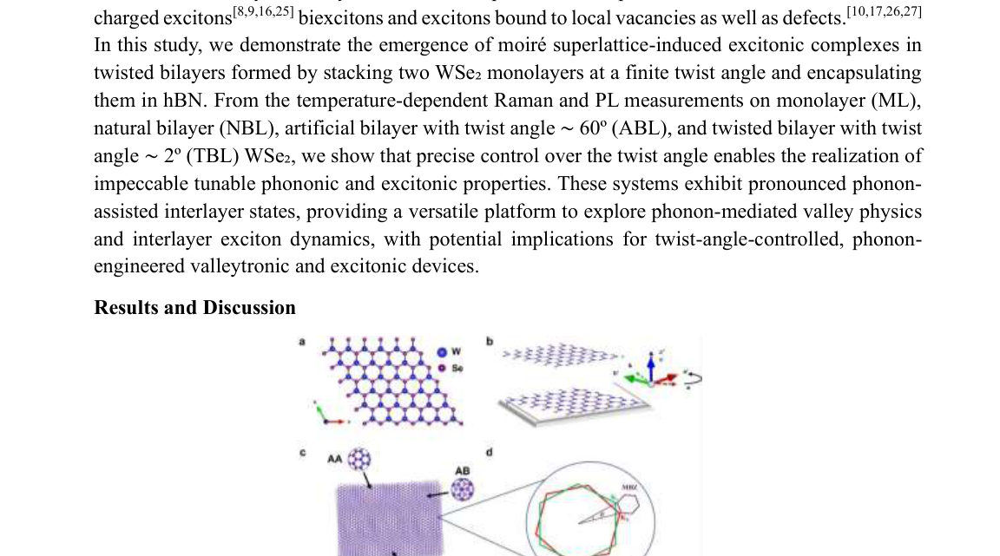
<figcaption class="paper-figure-caption"><b>Fig 1.</b> Figure 1. Structural configuration of twisted bilayers. (a) Top-view of the crystal structure of 2H-WSe2. (b) Schematic of twisting of bilayer WSe2. (c) Schematic representation of the moiré superlattice resulting from the twisting of two WSe2 monolayers, with insets showing the various atomic stackings AA, AB, and SP (saddle point). (d) The Brillouin zones of top (green) and</figcaption>
</figure>
<figure class="paper-figure-card">
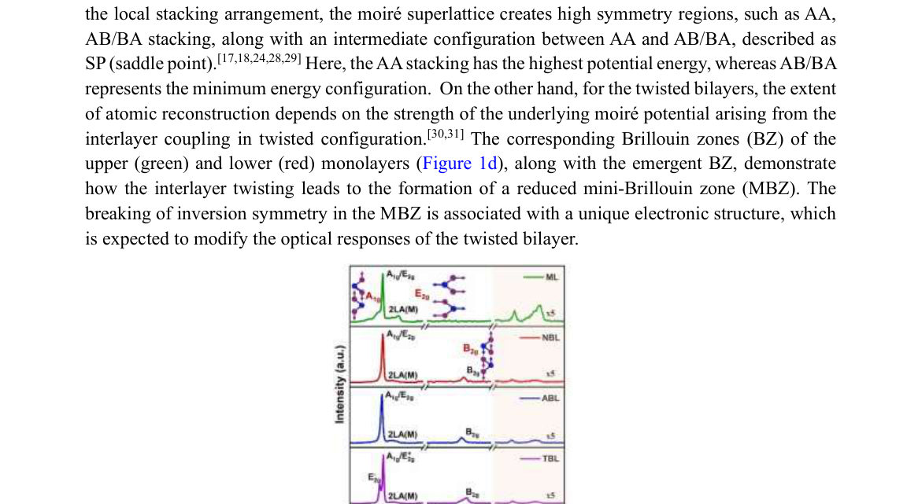
<figcaption class="paper-figure-caption"><b>Fig 2.</b> Figure 2. Raman spectra at 3 K for various stackings of WSe2 layers. Raman spectra of monolayer (ML), natural bilayer (NBL), and fabricated bilayers with twist angle, θ ∼ 60º (artificial bilayer, ABL) and θ ∼ 2º (twisted bilayer, TBL). The insets illustrate the schematics of atomic displacements of the A1g, E2g and B2g modes, where blue and purple spheres denote W and Se atoms, respectively. The intensity of high frequency modes (370 - 425 cm-1) is amplified ~ 5 times for better visibility.</figcaption>
</figure>
<figure class="paper-figure-card">
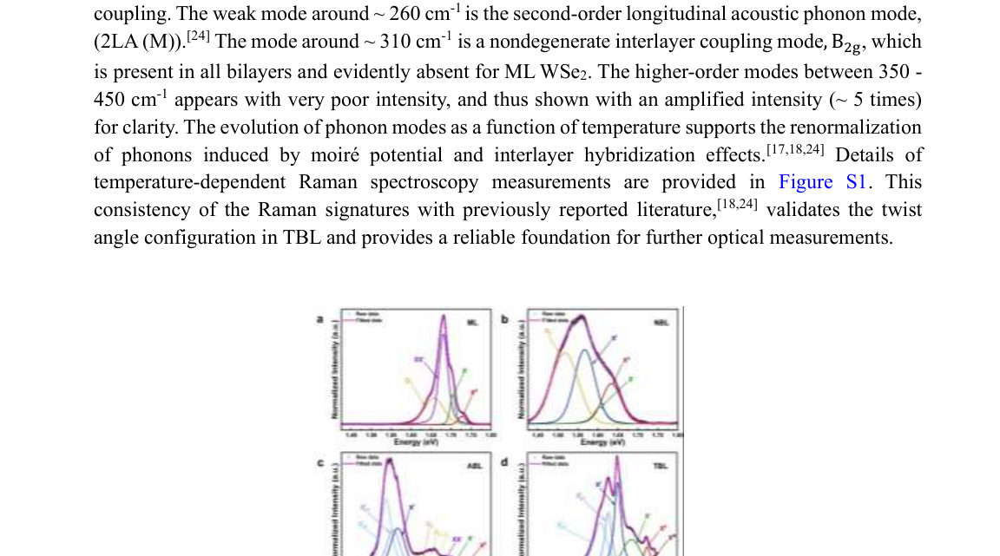
<figcaption class="paper-figure-caption"><b>Fig 3.</b> Figure 3. Normalized PL spectra at 3 K for various stacking layers of WSe2. (a) Monolayer (ML), (b) natural bilayer (NBL), (c) artificial bilayer fabricated with twist angle, θ ∼ 60º (ABL), and (d) twisted bilayer with θ ∼ 2º (TBL).</figcaption>
</figure>
<figure class="paper-figure-card">
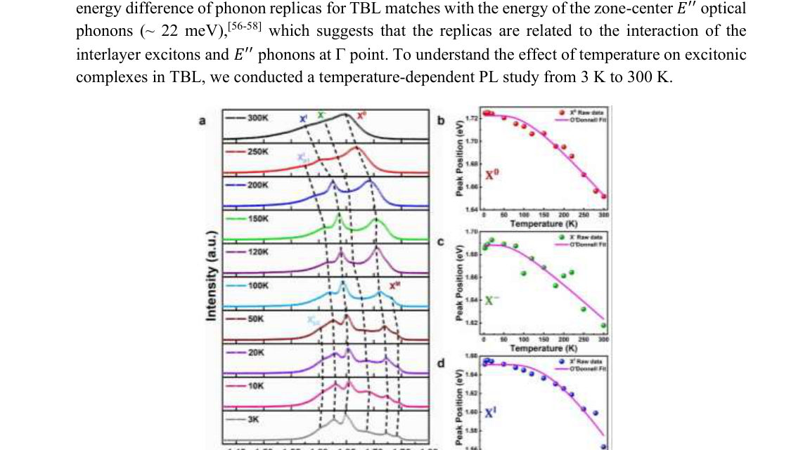
<figcaption class="paper-figure-caption"><b>Fig 4.</b> Figure 4. Temperature dependence of PL for TBL. (a) Normalized PL spectra of TBL between 3 K to 300 K. Temperature-dependent shifting of (b) neutral exciton (X0), (c) trion (X−), and (d) interlayer exciton (XI), with solid lines representing the O’Donnell equation fit.[8,59]</figcaption>
</figure>
<figure class="paper-figure-card">
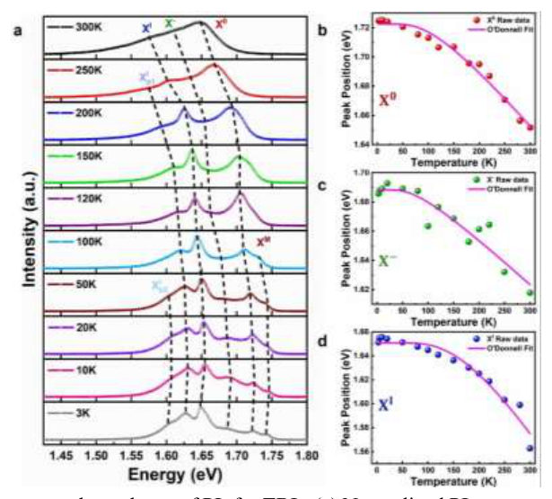
<figcaption class="paper-figure-caption"><b>Fig 5.</b> Figure 4a shows the evolution of the PL spectrum as a function of temperature in the range 3 K to 300 K. Notably, within the temperature range 3 K - 50 K, the phonon replicas are well resolved and prominent, signifying strong exciton-phonon coupling. However, as the temperature rises, the replicas gradually smear their individual prominence and broaden. This merging arises as the</figcaption>
</figure>
</div>

<p><strong>Summary.</strong> This work reports on the use of moiré engineering in twisted WSe2 bilayers to control optoelectronic properties. By tuning the twist angle, researchers observe enhanced interlayer exciton emission and strong exciton-phonon coupling. This establishes the TBL as a highly tunable platform for studying quantum phenomena in 2D materials.</p>
<p><strong>Why it may be interesting.</strong> The detailed study of exciton-phonon coupling in a tunable, engineered quantum material platform (TBL) provides quantitative parameters for understanding open quantum systems dynamics in 2D semiconductors.</p>
<details>
<summary>Detailed structure</summary>
<p><strong>Main problem.</strong> The study investigates how engineering the twist angle in twisted WSe2 bilayers modifies the excitonic landscape and controls phonon-mediated recombination processes.</p>
<p><strong>Main result.</strong> The moiré potential significantly enhances interlayer exciton emission and stabilizes these excitons by redistributing carriers into indirect valleys, while also suppressing defect-related emission.</p>
<p><strong>Method.</strong> The research employs low-temperature photoluminescence (PL) spectroscopy and temperature-dependent Raman spectroscopy to probe electronic and vibrational properties.</p>
<p><strong>Model / system.</strong> The physical system is a twisted bilayer of tungsten diselenide (WSe2/WSe2) encapsulated in hBN, forming a moiré superlattice. The analysis models temperature dependence using the Varshni and O’Donnell equations.</p>
<p><strong>Key observables.</strong> Interlayer exciton emission ($ ext{X}<em ext_p="ext{p">{    ext{I}}$), phonon replicas ($ ext{X}</em>$), PL intensity, and Raman mode splittings.}1 ext{I}},    ext{X}_{    ext{p}2 ext{I}</p>
<p><strong>Important parameters / regimes.</strong> Twist angle ($  heta$), temperature (3 K to 300 K), and fitting parameters like Varshni ($\alpha, eta$) and O’Donnell ($S, \hbar\omega$) constants.</p>
<p><strong>Assumptions / limitations.</strong> The electronic structure modification is assumed to be dictated by the moiré potential, and temperature effects are modeled using established empirical equations (Varshni/O’Donnell).</p>
<p><strong>Figures summary.</strong> Figures show PL spectra comparing different stacking orders (ML, NBL, TBL) and Raman spectra demonstrating mode splitting due to moiré potential hybridization.</p>
<p><strong>Paper structure.</strong> The paper systematically compares PL and Raman signatures across various stacking configurations (ML, NBL, ABL, TBL) to quantify how twist angle controls exciton localization, phonon coupling, and temperature-dependent bandgap renormalization.</p>
</details>
<details>
<summary>Abstract</summary>
<p>We report light emission from the moire superlattice of a twisted bilayer of tungsten diselenide (WSe2/WSe2) encapsulated in insulating hexagonal boron nitride (hBN). The low-temperature photoluminescence (PL) spectroscopy reveals signatures of moire-potential induced strong interlayer excitonic emission and phonon-assisted recombination, while the twisting significantly suppresses the emission from localized defect-bound excitons. The moire potential redistributes carriers into indirect valleys, thereby enhancing recombination efficiency and stabilizing the interlayer excitons. Our findings establish that precise control of twist angle and dielectric environment provides a new route for engineering excitonic systems for exploring exciton-phonon interactions and associated quantum phenomena in transition metal dichalcogenides.</p>
</details>
<p><sub><a href="#top">↑ back to top</a></sub></p>

<p><a id="paper-2606.01114"></a></p>
<h3 id="magnumnpdistributed-accelerating-finite-difference-micromagnetic-simulations-with-multiple-gpus"><a href="http://arxiv.org/abs/2606.01114v1">Magnum.np.distributed: Accelerating Finite Difference Micromagnetic Simulations with Multiple GPUs</a></h3>
<p><strong>Authors:</strong> Tsz Chung Cheng, Yuichiro Kurokawa, Hiromi Yuasa<br>
<strong>Type:</strong> theory · <strong>Category:</strong> numerical methods · <strong>PDF:</strong> <a href="https://arxiv.org/pdf/2606.01114v1">https://arxiv.org/pdf/2606.01114v1</a><br>
<strong>Analysis basis:</strong> full PDF text, analyzed in chunks
<strong>Topic relevance:</strong> <code>analog quantum simulation</code> <strong>1/5</strong> · <code>exotic spin models in light-matter</code> <strong>1/5</strong> · <code>methods for driven-dissipative</code> <strong>1/5</strong> · <code>spintronics-quantum-optics interface</code> <strong>1/5</strong></p>
<div class="figure-strip-hint">↔ Scroll figures horizontally</div>
<div class="paper-figures-scroll">
<figure class="paper-figure-card">
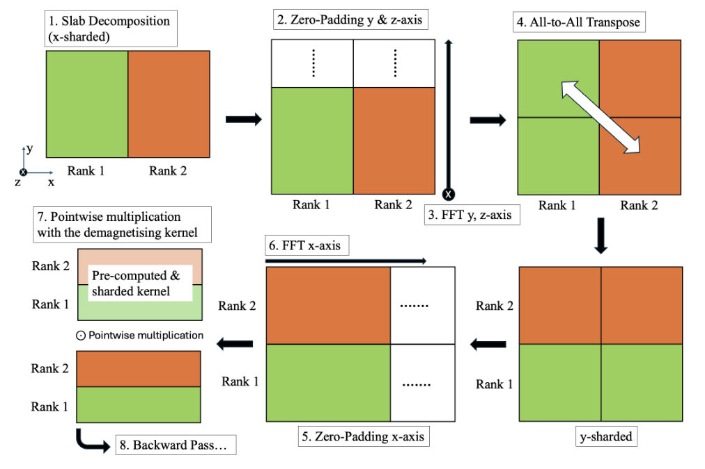
<figcaption class="paper-figure-caption"><b>Fig 1.</b> Figure 1. Schematic diagram of the distributed 3D FFT implementation. The magnetisation is first split along the x-axis using slab decomposition. The magnetisation is padded, and the FFT is computed along the y and x axes. An all-to-all transpose is then performed to shard the vectors along the y-axis, followed by zero-padding and FFT computation along the x-axis. Then, a point-to-point multiplication is performed using the demagnetisation kernel. For the backward pass, the steps are reverted with truncation replacing padding and inverse FFT replacing the forward FFT.</figcaption>
</figure>
<figure class="paper-figure-card">
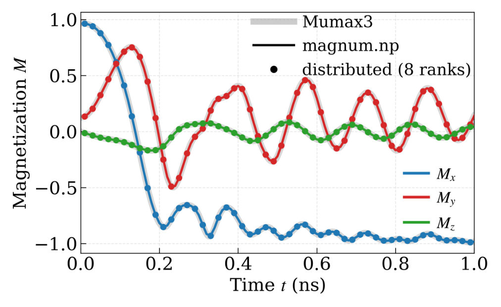
<figcaption class="paper-figure-caption"><b>Fig 2.</b> Figure 2. Simulated magnetisation components in the muMAG standard problem 4. The results from Mumax3 and the original non-distributed version of magnum.np were compared with those from the distributed implementation using 8 ranks. The results match both references, validating the implementation of the distributed LLG-RKF45 solver, demagnetisation, and exchange effective field.</figcaption>
</figure>
<figure class="paper-figure-card">
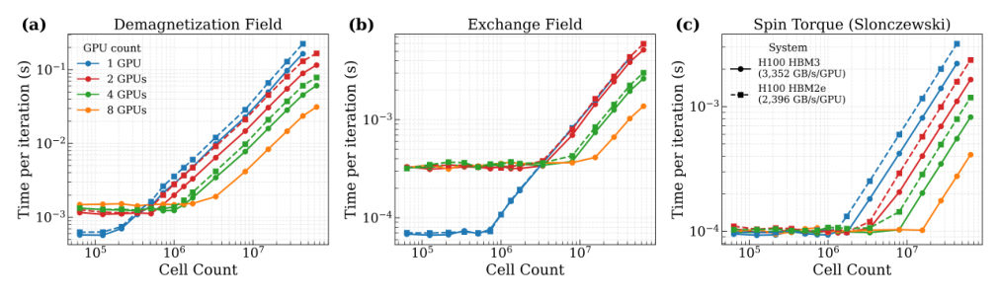
<figcaption class="paper-figure-caption"><b>Fig 3.</b> Figure 3. Performance (time per iteration) of various effective fields on two single-node NVIDIA H100 Hopper GPU systems: HBM3 (solid lines, 3,352 GB/s/GPU, up to 8 GPUs via NVSwitch) and HBM2e (dashed lines, 2,396 GB/s/GPU, up to 4 GPUs via NVLink). (a) The demagnetisation field is computationally and communication-intensive; performance gains begin at around 106 cells on both systems. Despite the 40% difference in memory bandwidth, both systems exhibit near-identical relative scaling, confirming that speedup is governed by the algorithm’s communication-to-computation ratio. (b) The exchange field requires a halo exchange at each slab boundary. Significant overhead is observed below 106...</figcaption>
</figure>
<figure class="paper-figure-card">
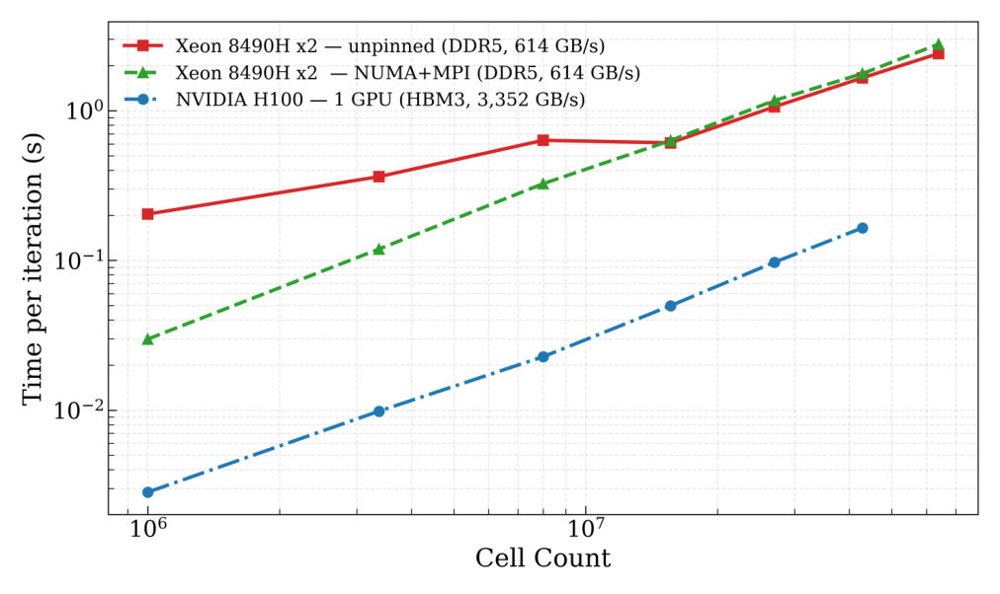
<figcaption class="paper-figure-caption"><b>Fig 4.</b> Figure 4. Performance (time per iteration) of the demagnetisation field. Non-distributed magum.np was evaluated on a single NVIDIA H100 HBM3 GPU, and a CPU compute node with 2 Intel Xeon Platinum 8490H 60-core CPUs (no NUMA-pinning). The distributed magnum.np implementation enabled NUMA-based pinning to reduce cross-NUMA communication and yielded a significant performance gain at 106 cells, bringing it to within 10 times slower than a single GPU.</figcaption>
</figure>
<figure class="paper-figure-card">
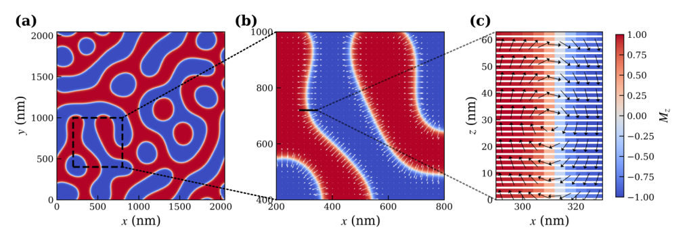
<figcaption class="paper-figure-caption"><b>Fig 5.</b> Figure 5. A simulated i-DMI inducing multilayer. (a) Mz at the top layer after relaxation via LLG-RKF45 solver. (b) A zoom-in view of (a) with arrows depicting in-plane components. (c) Cross-section across a domain wall where arrows depict the x and z-components. A vortex is formed in the film with weak i-DMI.</figcaption>
</figure>
</div>

<p><strong>Summary.</strong> This work presents a novel, Python-native, multi-GPU framework built on PyTorch Distributed to accelerate micromagnetic simulations. By efficiently distributing the computational mesh, the authors achieve substantial speedups in calculating critical effective fields like the demagnetization field. This advancement allows researchers to model larger and more complex spintronic devices previously out of reach due to computational limitations.</p>
<p><strong>Why it may be interesting.</strong> While focused on classical micromagnetics, the core contribution is a highly optimized, portable, and scalable numerical framework using modern deep learning infrastructure (PyTorch Distributed) for solving complex partial differential equations, which is highly relevant for simulating quantum many-body dynamics.</p>
<details>
<summary>Detailed structure</summary>
<p><strong>Main problem.</strong> The primary goal is to accelerate computationally intensive finite difference micromagnetic simulations, which are essential for studying nanomagnetism and spintronics.</p>
<p><strong>Main result.</strong> The authors achieved significant speedups, reporting up to a 7.0x acceleration for demagnetization field calculations across 8 GPUs via NVLink, and a 6.8x speedup on CPU using NUMA pinning.</p>
<p><strong>Method.</strong> They extended the Python-native FDM solver <code>magnum.np</code> by integrating PyTorch Distributed to enable efficient, multi-GPU computation across sharded simulation meshes.</p>
<p><strong>Model / system.</strong> The simulations model micromagnetism using the Landau-Lifshitz-Gilbert (LLG) equation, applied to systems like permalloy magnets and Pt/Gd/Co/Ni stacks.</p>
<p><strong>Key observables.</strong> Simulation time per iteration step, calculated effective fields (demagnetization, exchange), and magnetization components ($M_z$, in-plane components).</p>
<p><strong>Important parameters / regimes.</strong> The simulation size can reach $23.6$ million cells; performance is benchmarked across various hardware, including H100 GPUs and multi-socket CPUs.</p>
<p><strong>Assumptions / limitations.</strong> The framework assumes the simulation mesh can be sharded along one axis, and performance scaling is limited by communication overheads like halo exchange latency.</p>
<p><strong>Figures summary.</strong> Figures illustrate the schematic of the distributed 3D FFT implementation, comparisons of simulated magnetization components for standard problems, and performance scaling plots comparing GPU vs. CPU execution times.</p>
<p><strong>Paper structure.</strong> The paper details the extension of the solver using PyTorch Distributed, presents performance benchmarks across different effective field calculations (demagnetization, exchange), and validates the results against established solvers like Mumax3.</p>
</details>
<details>
<summary>Abstract</summary>
<p>Micromagnetic simulations are essential tools in nanomagnetism and spintronics research. Although widely adopted solvers like Mumax3 and the Python-native magnum.np use GPU acceleration to improve performance, these tools are limited to single-device computation. In this work, we present the first Python-native multi-GPU micromagnetic framework by extending magnum.np with PyTorch Distributed. This leverages high-speed communication and computation across multiple GPUs while retaining the benefits of ease of installation, platform-agnostic design, and compatibility with Python. For computationally intensive demagnetisation effective-field calculations, we achieve a 7.0x speedup across 8 GPUs connected via NVLink, whereas Halo exchange required for Heisenberg exchange shows limited scaling due to kernel dispatch latency. We also demonstrated the framework's versatility by achieving a 6.8x speedup in demagnetisation field computation on CPU with NUMA pinning via the MPI backend of PyTorch Distributed. Faster turnaround times will enable researchers to explore larger, more complex systems and accelerate the design cycle for novel spintronic devices.</p>
</details>
<p><sub><a href="#top">↑ back to top</a></sub></p>

<p><a id="paper-2606.01406"></a></p>
<h3 id="rogue-waves-from-noise-induced-modulational-instability-of-a-plane-wave"><a href="http://arxiv.org/abs/2606.01406v1">Rogue waves from noise-induced modulational instability of a plane wave</a></h3>
<p><strong>Authors:</strong> D. S. Agafontsev<br>
<strong>Type:</strong> theory · <strong>Category:</strong> other · <strong>PDF:</strong> <a href="https://arxiv.org/pdf/2606.01406v1">https://arxiv.org/pdf/2606.01406v1</a><br>
<strong>Analysis basis:</strong> full PDF text, analyzed in chunks
<strong>Topic relevance:</strong> <code>analog quantum simulation</code> <strong>1/5</strong> · <code>driven-dissipative phase transition</code> <strong>1/5</strong> · <code>non-equilibrium dynamics</code> <strong>1/5</strong> · <code>non-equilibrium universality</code> <strong>1/5</strong></p>
<div class="figure-strip-hint">↔ Scroll figures horizontally</div>
<div class="paper-figures-scroll">
<figure class="paper-figure-card">
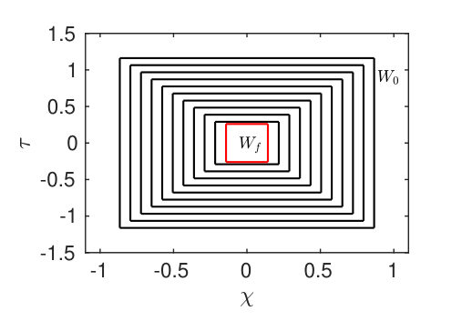
<figcaption class="paper-figure-caption"><b>Fig 1.</b> FIG. 1. (Color on-line) Rectangular regions in the (χ, τ)- variables, over which the deviations (41) between RWs and their fits with various exact solutions are calculated. Black lines show the nested rectangles Wm, m = 0, ..., 9, while red lines indicate the rectangular region Wf, in which the param- eters of the fits with exact solutions are calculated.</figcaption>
</figure>
<figure class="paper-figure-card">
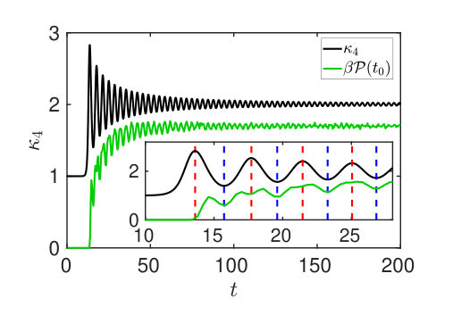
<figcaption class="paper-figure-caption"><b>Fig 2.</b> FIG. 2. (Color on-line) Evolution of the fourth-order mo- ment of amplitude κ4 = ⟨|ψ|4⟩/⟨|ψ|2⟩2 (black) and distribu- tion P(t0) of moments of time t0 when RWs reach their max- imum amplitude (green), scaled with a coefficient β = 307 for better visualization. The inset shows a zoomed-in beginning of the nonlinear stage of MI (the transient regime), with the red dashed lines indicating the moments of the first four local maximums of κ4 at t = 13.6, 17.7, 21.4 and 25, and the blue dashed lines – the moments of the first four local minimums at t = 15.7, 19.6, 23.3 and 26.8.</figcaption>
</figure>
<figure class="paper-figure-card">
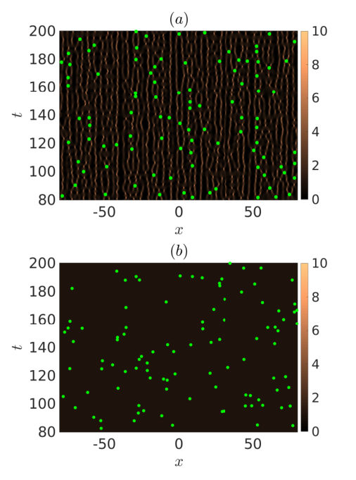
<figcaption class="paper-figure-caption"><b>Fig 3.</b> FIG. 4. (Color on-line) (a) Space-time evolution near the statistically stationary state of MI, t ∈[80, 200], from one re- alization of initial conditions (36). Color shows the intensity |ψ|2, while green dots indicate the positions of RW maxi- mums. (b) Random uniformly distributed positions (green dots) of the same number as the number of RWs detected in the experiment from panel (a). The color background is added for ease of comparison with panel (a) and corresponds to unit intensity.</figcaption>
</figure>
<figure class="paper-figure-card">
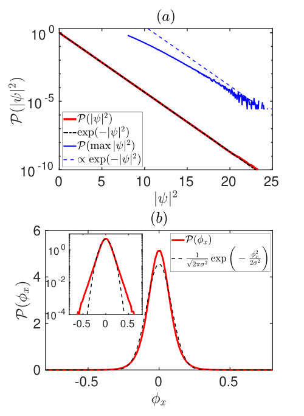
<figcaption class="paper-figure-caption"><b>Fig 4.</b> FIG. 3. (Color on-line) (a) PDFs of intensity for the whole wavefield P(|ψ|2) (red) and for the maximums of collected RWs P(max |ψ|2) (blue), and (b) PDF of chirp ϕx = ∂arg ψ/∂x at the RW maximums, for RWs close to the statistically stationary state t ∈[80, 200] of MI. In panel (a), the black dash-dot line shows the exponential distribution exp(−|ψ|2), while the blue dashed line indicates exponential dependency ∝exp(−|ψ|2). In panel (b), the inset shows the same PDF in semi-logarithmic scale, while the black dashed line marks the Gaussian distribution of the same variance.</figcaption>
</figure>
<figure class="paper-figure-card">
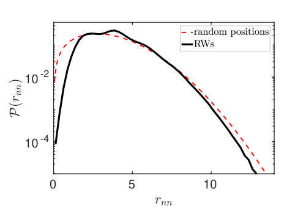
<figcaption class="paper-figure-caption"><b>Fig 5.</b> FIG. 5. (Color on-line) Ensemble-averaged PDFs of space- time distance to the nearest neighbor rnn for RW maxi- mums (thick black) and random uniformly distributed posi- tions (47) with density µ = 2.12×10−2 per unit area (dashed red). When calculating rnn, the space-time distance between two points is measured according to Eq. (46) and the pe- riodic boundary conditions are forced in the time interval t ∈[80, 200] to model points outside of this interval.</figcaption>
</figure>
</div>

<p><strong>Summary.</strong> This paper numerically studies rogue wave formation in the 1D-NLSE under noise-induced modulational instability. It systematically analyzes these extreme events by comparing them against known exact solutions, finding that the dynamics are best described by the collision of a few nonlinear modes. The results suggest that RWs arise from the synchronization of these underlying nonlinear structures.</p>
<p><strong>Why it may be interesting.</strong> This work is highly relevant to the study of open quantum systems and quantum optics because the 1D-NLSE is a canonical model for nonlinear wave propagation, and the study of extreme events like rogue waves provides insights into nonlinear energy localization and wave-wave interactions.</p>
<details>
<summary>Detailed structure</summary>
<p><strong>Main problem.</strong> The paper investigates the formation and characteristics of rogue waves (RWs) that emerge during the nonlinear stage of noise-induced modulational instability (MI) in a plane wave.</p>
<p><strong>Main result.</strong> The study shows that RWs are significantly more numerous than in linear systems, and their dynamics are best approximated by the collision of two nonlinear modes, such as solitons or breathers.</p>
<p><strong>Method.</strong> The analysis combines numerical simulations of the 1D-NLSE with rigorous comparisons of the observed RWs against known exact solutions derived via the Inverse Scattering Transform (IST).</p>
<p><strong>Model / system.</strong> The primary model is the one-dimensional nonlinear Schrödinger equation (1D-NLSE) of the focusing type. The analysis compares RWs generated from noise-induced MI against various exact solutions, including multi-soliton and multi-breather collision models.</p>
<p><strong>Key observables.</strong> Frequency of RW occurrence (monitored via the fourth-order moment $\kappa_4$), the intensity distribution of RWs, and the deviation measure $D_\Lambda$ used to quantify the fit quality between observed RWs and theoretical models.</p>
<p><strong>Important parameters / regimes.</strong> The analysis depends on the initial noise spectrum (Gaussian vs. MI spectrum) and the parameters defining the best-fit models, such as soliton/breather eigenvalues ($\lambda_n$) and collision parameters.</p>
<p><strong>Assumptions / limitations.</strong> The core hypothesis tested is that RWs emerge due to the synchronization of only a few nonlinear modes (solitons or breathers) within the complex wavefield, although this is noted as potentially naive.</p>
<p><strong>Figures summary.</strong> Figures compare the Probability Density Functions (PDFs) of intensity and phase slope across different spectral regimes (MI vs. Gaussian) and show nested rectangular regions used for calculating the deviation measure $D_\Lambda$ during model fitting.</p>
<p><strong>Paper structure.</strong> The paper progresses from establishing the physical model (1D-NLSE) and the phenomenon (RWs from MI) to developing advanced mathematical tools (IST, dressing method) and finally comparing the numerically observed RWs against a comprehensive database of known exact solutions (soliton/breather collisions).</p>
</details>
<details>
<summary>Abstract</summary>
<p>In the framework of the one-dimensional nonlinear Schrodinger equation (1D-NLSE) of the focusing type, the present paper studies numerically rogue waves (RWs) that emerge in the nonlinear stage of noise-induced modulational instability of a plane wave. For a large ensemble of simulations, all sufficiently large local maximums of the wavefield (i.e., RWs) are systematically collected and analyzed. It is shown that the frequency of occurrence of such maximums begins to increase from zero at the time, when the fourth-order moment of amplitude reaches its first (largest) local maximum, and then grows in an oscillatory manner approaching its asymptotic value at long time. Near the statistically stationary state, the 1D-NLSE generates a much larger number of RWs than a comparable linear system, but, in average, one RW affects a much smaller spatiotemporal area. The distribution of these RWs by maximum intensity represents an exponential-like function without noticeable changes in behavior, indicating a similar origin for RWs of significantly different amplitudes. The collected RWs are compared within a sufficiently large spatiotemporal window with nine exact solutions, of which two models reproduce RW dynamics much better than the others: a general collision of two solitons and a general collision of two Tajiri-Watanabe breathers; RWs are fitted with these collisions using pre-compiled databases of such solutions. The parameters of the two models turn out to be quite similar to the direct scattering transform spectrum of the whole wavefield, supporting a hypothesis that RWs may emerge due to synchronization of a few nonlinear modes (solitons or breathers) in presence of many other nonlinear modes of the wavefield.</p>
</details>
<p><sub><a href="#top">↑ back to top</a></sub></p>

<p><a id="paper-2606.01408"></a></p>
<h3 id="quantum-statistics-and-structural-topology-govern-thermal-transport-in-two-dimensional-monolayer-amorphous-carbon"><a href="http://arxiv.org/abs/2606.01408v1">Quantum Statistics and Structural Topology Govern Thermal Transport in Two-Dimensional Monolayer Amorphous Carbon</a></h3>
<p><strong>Authors:</strong> Gizem Kurt, Haldun Sevincli<br>
<strong>Type:</strong> theory · <strong>Category:</strong> disordered systems and neural networks · <strong>PDF:</strong> <a href="https://arxiv.org/pdf/2606.01408v1">https://arxiv.org/pdf/2606.01408v1</a><br>
<strong>Analysis basis:</strong> full PDF text, analyzed in chunks
<strong>Topic relevance:</strong> <code>Keldysh / 2PI / non-Gaussian methods</code> <strong>1/5</strong> · <code>methods for driven-dissipative</code> <strong>1/5</strong> · <code>non-equilibrium dynamics</code> <strong>1/5</strong></p>
<div class="figure-strip-hint">↔ Scroll figures horizontally</div>
<div class="paper-figures-scroll">
<figure class="paper-figure-card">
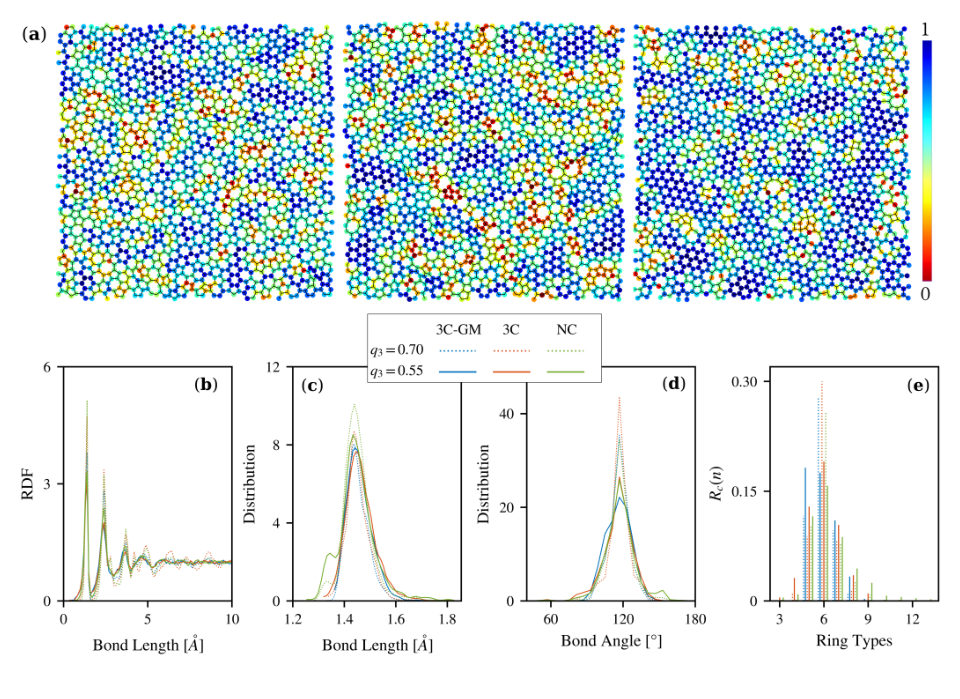
<figcaption class="paper-figure-caption"><b>Fig 1.</b> Figure 1: (a) Continuous random network (CRN) and embedded nanocrystallite (NC@RN) structures obtained using 3C-GM, 3C, and nC algorithms are shown in the left, center, and right panels. The colors represent the value of the local bond order parameter, q3. The average q3 value is 0.6 and it is the same for all structures shown in (a). Radial distribution function (b), bond length distribution (c), bond angle distribution (d), and ring statistics (e) of the configurations with different structural types and two different q3 parameters are shown in the lower panels.</figcaption>
</figure>
<figure class="paper-figure-card">
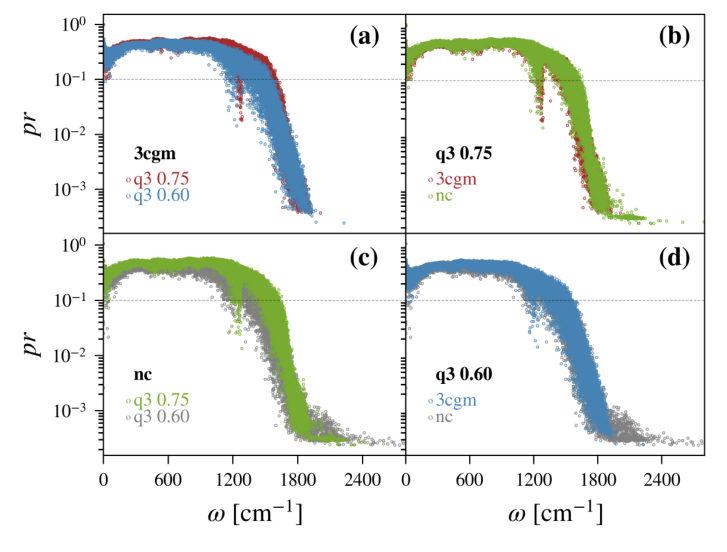
<figcaption class="paper-figure-caption"><b>Fig 2.</b> Figure 2: Mode participation ratios (PRs) for 3C-GM and NC@RN structures with order parameter values of q3 = 0.60 and q3 = 0.75.</figcaption>
</figure>
<figure class="paper-figure-card">
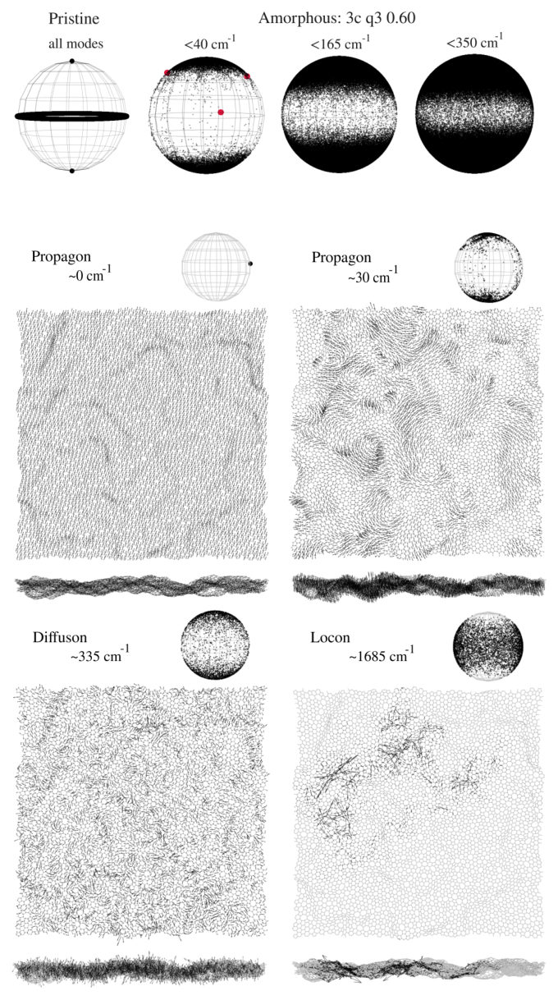
<figcaption class="paper-figure-caption"><b>Fig 3.</b> Figure 3: (a) Polarization spheres of 2D crystalline graphene (all modes) and amorphous carbon (certain frequency ranges) contrast the directionality of crystalline and amorphous structures in 2D. (b) Atomic displacements and corresponding polarizations of four selected modes illustrate the distinctive features of propagons, diffusons and locons. 20</figcaption>
</figure>
<figure class="paper-figure-card">
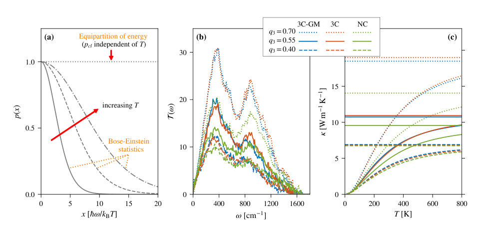
<figcaption class="paper-figure-caption"><b>Fig 4.</b> Figure 4: Classical and quantum mechanical weight functions are plotted as a function of x = ℏω/kBT (a). The classical weight function is equal to unity independent of temper- ature, whereas the quantum mechanical one peaks at x = 0 and approaches pcl at the high-temperature limit. Transmission (b) and conductivity (c) for different structure types and q3 values. Blue, red, and green colors represent 3C-GM, 3C, and nC schemes, while dotted, solid, and dashed curves stand for q3 values of 0.7, 0.55, and 0.4, respectively. In (b), the horizontal lines depict thermal conductivity values at the classical limit.</figcaption>
</figure>
<figure class="paper-figure-card">
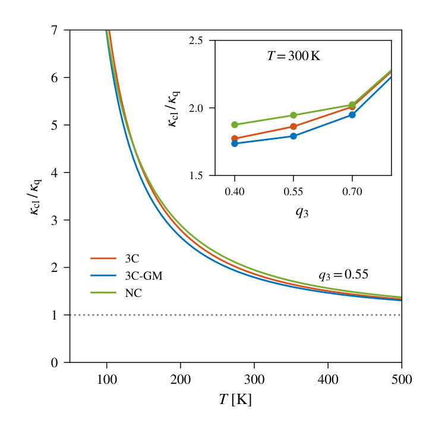
<figcaption class="paper-figure-caption"><b>Fig 5.</b> Figure 5: The ratio of classical and quantum thermal conductivities in MAC with q3 = 0.55 is plotted as a function of temperature (main plot), and at room temperature for varying q3 values (inset).</figcaption>
</figure>
</div>

<p><strong>Summary.</strong> This work theoretically investigates heat conduction in 2D amorphous carbon by coupling structural disorder ($q_3$) with quantum statistics. Using the Landauer formalism, the authors show that quantum effects significantly suppress thermal conductivity compared to classical models. The findings establish that the overall degree of amorphization is the dominant factor controlling heat flow in these disordered quantum materials.</p>
<p><strong>Why it may be interesting.</strong> The rigorous quantum mechanical treatment of heat transport in amorphous solids, particularly the comparison between quantum and classical limits, provides insights into energy dissipation mechanisms in disordered quantum materials.</p>
<details>
<summary>Detailed structure</summary>
<p><strong>Main problem.</strong> The study investigates how structural topology, degree of amorphization, and quantum statistics govern the thermal transport in two-dimensional amorphous solids.</p>
<p><strong>Main result.</strong> Quantum thermal conductivity is significantly lower than classical predictions, and the thermal transport is primarily governed by the global degree of amorphization ($q_3$) rather than specific microscopic structural details.</p>
<p><strong>Method.</strong> The authors employ a fully quantum mechanical framework using the Landauer formalism and Green's function techniques to calculate thermal conductivity ($\kappa$).</p>
<p><strong>Model / system.</strong> The physical system is two-dimensional monolayer amorphous carbon (MAC). Configurations are generated using various amorphization algorithms (e.g., Zachariasen-type networks) and characterized by the local bond order parameter, $q_3$.</p>
<p><strong>Key observables.</strong> Quantum Thermal Conductivity ($    ext{TC}$), Participation Ratio ($ ext{PR}$), Local bond order parameter ($q_3$), and vibrational mode characteristics (propagons, diffusons, locons).</p>
<p><strong>Important parameters / regimes.</strong> Temperature ($T$), degree of amorphization ($q_3$), and the ratio of classical to quantum conductivity ($\kappa_{cl}/\kappa_q$).</p>
<p><strong>Assumptions / limitations.</strong> The analysis relies on the Landauer formalism and assumes the system can be modeled by partitioning it into a central amorphous region and semi-infinite crystalline reservoirs.</p>
<p><strong>Figures summary.</strong> Figures illustrate representative MAC structures, the dependence of $\kappa$ on $T$ and $q_3$, and comparisons between quantum and classical conductivity predictions.</p>
<p><strong>Paper structure.</strong> The paper systematically analyzes structural characterization (using $q_3$ and bond statistics), vibrational mode analysis (using PR and polarization spheres), and finally calculates $\kappa(T)$ by comparing quantum (Bose-Einstein) and classical limits.</p>
</details>
<details>
<summary>Abstract</summary>
<p>We investigate the quantum thermal conductivity (TC) of two-dimensional monolayer amorphous carbon (MAC). We employ three distinct amorphization algorithms to generate various possible MAC configurations, ranging from Zachariasen-type continuous random networks to nanocrystallites embedded in random networks. The local bond order parameter, q3, is used to quantify the amorphousness of the structures, and TC is computed as functions of q3 and temperature. This framework enables us to assess how structural topology, degree of amorphization, and quantum statistics contribute to heat conduction in a two-dimensional amorphous solid. At room temperature, TC values are predicted to range between 3.5 to 10 W/m/K, in agreement with recent experiments. Analysis of vibrational modes reveals that, while the modes of these 2D amorphous structures fall into the usual categories, namely, propagons, diffusons, and locons, their polarization characteristics display distinct behavior. Owing to the fully quantum mechanical framework, we examine both low- and high-temperature characteristics of this 2D amorphous system. By examining the classical limit, we show that classical treatments substantially overestimate the TC of MAC; namely, the quantum TC is less than half of the classical value at room temperature and up to nearly an order of magnitude lower at low temperatures.</p>
</details>
<p><sub><a href="#top">↑ back to top</a></sub></p>

<p><a id="paper-2606.02338"></a></p>
<h3 id="ferroelectric-hysteresis-in-singly-aligned-graphene-hbn-moire-superlattices"><a href="http://arxiv.org/abs/2606.02338v1">Ferroelectric hysteresis in singly aligned graphene-hBN moiré superlattices</a></h3>
<p><strong>Authors:</strong> Bao Q. Tu, Tanweer Ahmed, Garen Avedissian, Suzanne Lancaster, Mayank Sharma, Kenji Watanabe, Takashi Taniguchi, Fèlix Casanova, Marco Gobbi, Luis E. Hueso<br>
<strong>Type:</strong> experiment · <strong>Category:</strong> other · <strong>PDF:</strong> <a href="https://arxiv.org/pdf/2606.02338v1">https://arxiv.org/pdf/2606.02338v1</a><br>
<strong>Analysis basis:</strong> full PDF text, analyzed in chunks
<strong>Topic relevance:</strong> <code>analog quantum simulation</code> <strong>1/5</strong> · <code>driven-dissipative phase transition</code> <strong>1/5</strong></p>
<div class="figure-strip-hint">↔ Scroll figures horizontally</div>
<div class="paper-figures-scroll">
<figure class="paper-figure-card">
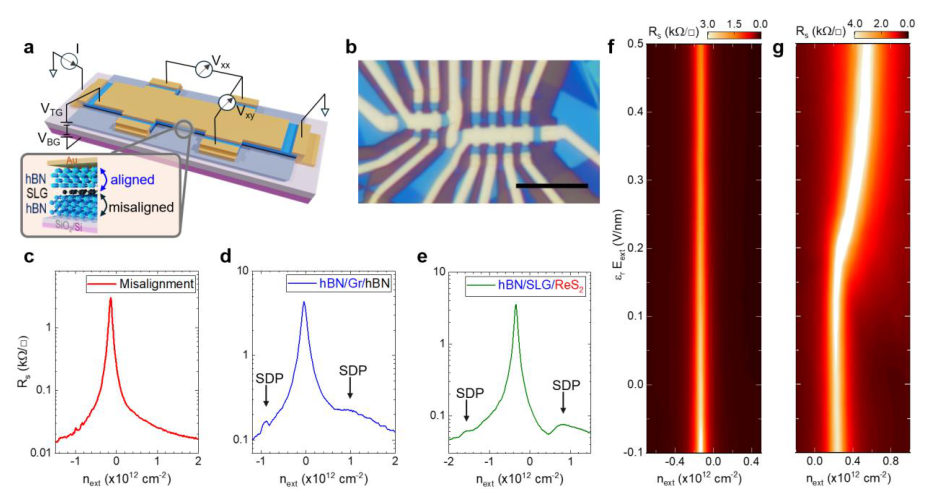
<figcaption class="paper-figure-caption"><b>Fig 1.</b> Figure 1. (a) Device schematic and measurement configurations. The inset shows the cross-</figcaption>
</figure>
<figure class="paper-figure-card">
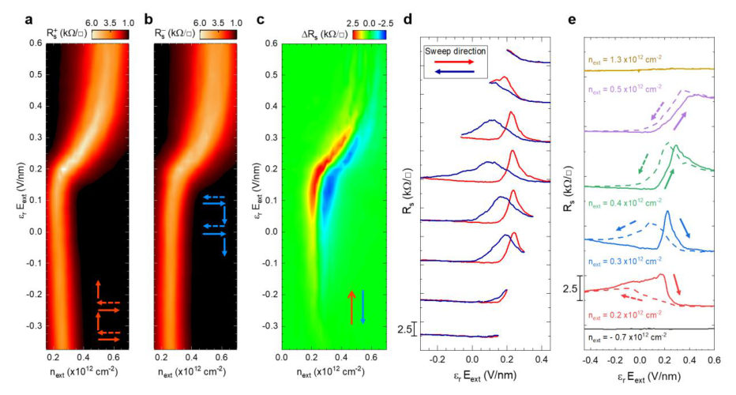
<figcaption class="paper-figure-caption"><b>Fig 2.</b> Figure 2. (a, b), 𝑛ext −𝐸𝑒𝑥𝑡 phase diagram of Device B1 for forward (backward) 𝐸𝑒𝑥𝑡 sweep</figcaption>
</figure>
<figure class="paper-figure-card">
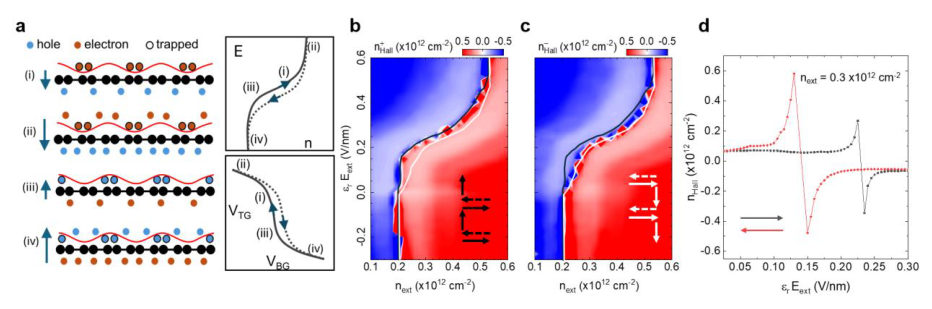
<figcaption class="paper-figure-caption"><b>Fig 3.</b> Figure 3. (a) Schematic illustration of the charge-trapping mechanism at the top moiré</figcaption>
</figure>
<figure class="paper-figure-card">
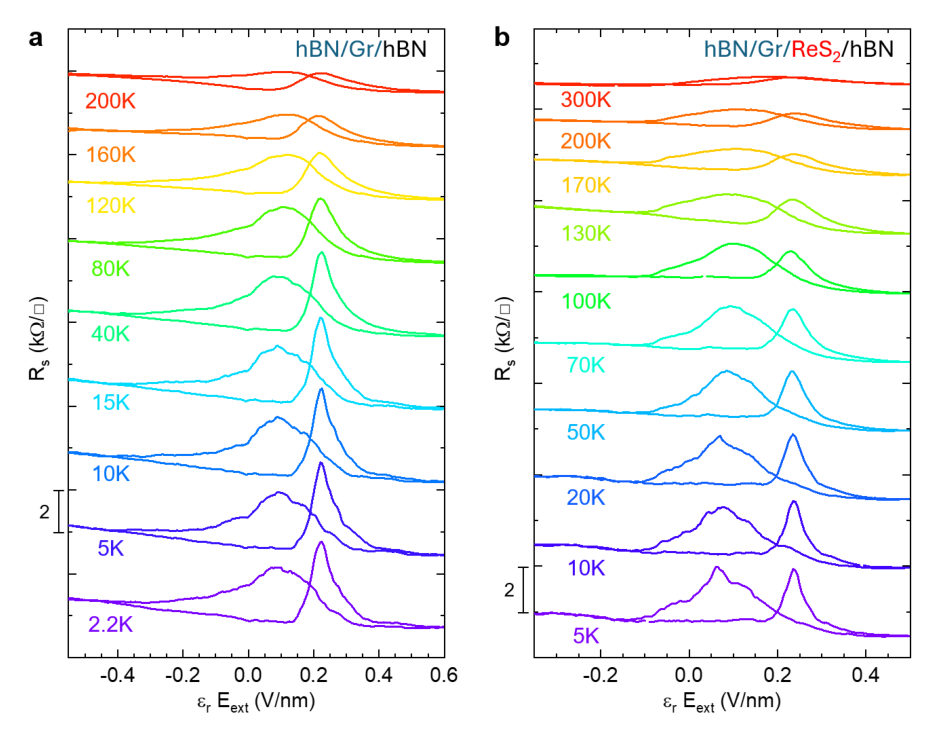
<figcaption class="paper-figure-caption"><b>Fig 4.</b> Figure 4. Temperature dependence of ferroelectric hysteresis in singly aligned hBN/SLG on</figcaption>
</figure>
</div>

<p><strong>Summary.</strong> The researchers successfully demonstrated ferroelectric hysteresis in single-layer graphene/hBN moiré superlattices, proving that single-interface alignment is sufficient to induce this effect. By analyzing the $n_{ext} - E_{ext}$ phase space, they attributed the hysteresis to abnormal charge screening within the moiré band. This work establishes a promising, scalable platform for developing ultrathin, non-volatile electronic devices.</p>
<p><strong>Why it may be interesting.</strong> While focused on condensed matter electronics, the study of emergent polarization and charge screening in moiré heterostructures touches upon concepts of broken symmetry and emergent order parameters relevant to quantum materials.</p>
<details>
<summary>Detailed structure</summary>
<p><strong>Main problem.</strong> To determine if ferroelectric hysteresis exists in single-layer graphene (SLG)-hBN moiré superlattices, contrasting with previous work on doubly-aligned systems.</p>
<p><strong>Main result.</strong> A robust ferroelectric response was demonstrated in the SLG-hBN moiré superlattice, persisting from 2K to room temperature, suggesting a viable platform for non-volatile electronics.</p>
<p><strong>Method.</strong> Electrical characterization using Hall measurements and sweeping the external electric field ($E_{ext}$) and carrier concentration ($n_{ext}$) to observe hysteretic behavior.</p>
<p><strong>Model / system.</strong> The physical system is the SLG-hBN moiré superlattice, where the moiré potential dictates the electronic structure and charge screening mechanisms.</p>
<p><strong>Key observables.</strong> Hysteretic behavior in sheet resistance ($R_S$) vs. $E_{ext}$, deviation of the Charge Neutrality Point (CNP) in the $n_{ext} - E_{ext}$ phase space, and the spontaneous polarization magnitude.</p>
<p><strong>Important parameters / regimes.</strong> Temperature range (2K to 300K), external electric field ($E_{ext}$), and carrier concentration ($n_{ext}$).</p>
<p><strong>Assumptions / limitations.</strong> The hysteretic behavior is attributed to abnormal charge screening due to the moiré superlattice band structure, and that single alignment is sufficient to induce the effect.</p>
<p><strong>Figures summary.</strong> Figures illustrate device schematics, $R_S$ vs. $n_{ext}$ and $n_{ext} - E_{ext}$ phase space diagrams showing hysteresis loops, and temperature dependence confirming the effect's stability.</p>
<p><strong>Paper structure.</strong> The paper systematically investigates the ferroelectric response by comparing different alignment conditions, mapping the $n_{ext} - E_{ext}$ phase space, quantifying the hysteresis, and confirming the temperature stability of the effect.</p>
</details>
<details>
<summary>Abstract</summary>
<p>Ferroelectric materials have the unique ability to maintain an electric polarization which can be reversed under an external applied electric field. This property makes them valuable for applications such as non-volatile random-access memories, transducers, actuators and electro optic modulators. Recently, emergent unconventional ferroelectricity has been demonstrated in moiré superlattices of bilayer graphene and hexagonal boron nitride (hBN) hosting non centrosymmetric stacking order. Whether this phenomenon is also present in noncentrosymmetric single layer graphene (SLG)-hBN moiré superlattices is still under debate. Here we demonstrate a ferroelectric response in an SLG-hBN moiré superlattice. Through Hall measurements, we pinpoint the origin of the hysteretic behavior to abnormal charge screening due to the moiré superlattice band and estimate the spontaneous polarization magnitude in the moiré superlattice structure. Temperature dependent measurements confirm that the hysteretic behavior persists from 2K up to room temperature, opening opportunities for high-mobility, ultrathin non-volatile devices</p>
</details>
<p><sub><a href="#top">↑ back to top</a></sub></p>

<p><a id="paper-2606.01585"></a></p>
<h3 id="universal-right-hand-chirality-of-evanescent-vector-fields"><a href="http://arxiv.org/abs/2606.01585v1">Universal Right-Hand Chirality of Evanescent Vector Fields</a></h3>
<p><strong>Authors:</strong> Yilin Qing, Ji Zou, Yi-Pu Wang, Gerrit E. W. Bauer, Tao Yu<br>
<strong>Type:</strong> theory · <strong>Category:</strong> other · <strong>PDF:</strong> <a href="https://arxiv.org/pdf/2606.01585v1">https://arxiv.org/pdf/2606.01585v1</a><br>
<strong>Analysis basis:</strong> full PDF text, analyzed in chunks
<strong>Topic relevance:</strong> <code>exotic spin models in light-matter</code> <strong>1/5</strong> · <code>spintronics-quantum-optics interface</code> <strong>1/5</strong></p>
<div class="figure-strip-hint">↔ Scroll figures horizontally</div>
<div class="paper-figures-scroll">
<figure class="paper-figure-card">
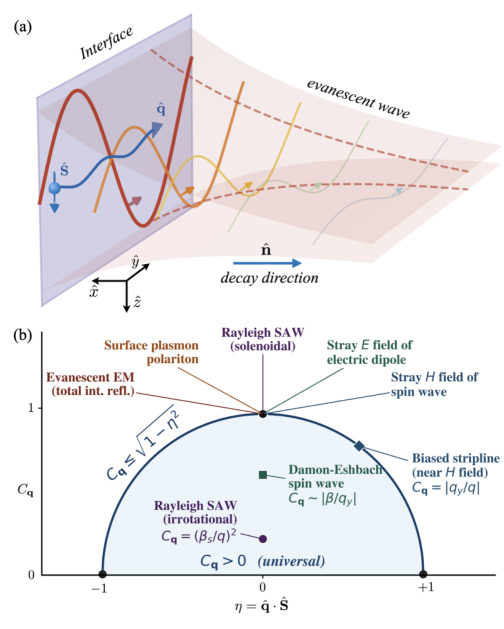
<figcaption class="paper-figure-caption"><b>Fig 1.</b> FIG. 1. (a) Artistic impression of a source-free evanescent vector field propagating along the interface in the ˆy direc- tion, with exponentially decaying amplitude along the inter- face normal −ˆx. (b) Chirality index Cq vs. spin-orbit pa- rameter η. The semicircle Cq = p</figcaption>
</figure>
<figure class="paper-figure-card">
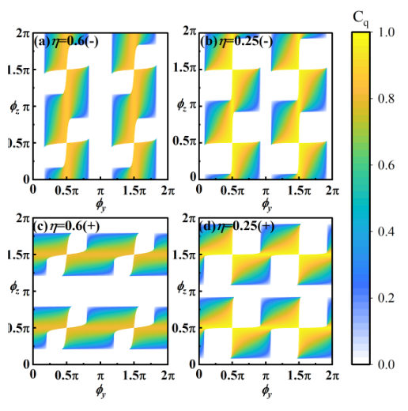
<figcaption class="paper-figure-caption"><b>Fig 2.</b> FIG. 2. Universal dependence of the chirality index Cq on the phases {ϕy, ϕz} for different spin-orbit parameter η. “−” in (a,b) and “+” in (c,d) indicate the two solutions (qz/qy)+ and (qz/qy)−in Eq. (12). In the calculation, we take β = |q|.</figcaption>
</figure>
</div>

<p><strong>Summary.</strong> This work establishes a universal physical law stating that any source-free, evanescent vector field must possess a fixed, right-handed chirality defined by the relationship between its propagation direction, spin, and surface normal. The authors derive a fundamental upper bound for this chirality, demonstrating that the absence of left-handed configurations underscores a deep physical non-equivalence between mirror-image wave states.</p>
<p><strong>Why it may be interesting.</strong> The concept of universal chirality locking in fundamental wave phenomena (like surface waves) provides a powerful, model-independent diagnostic tool for distinguishing between source-free physical regimes and those containing internal sources or higher-order multipoles.</p>
<details>
<summary>Detailed structure</summary>
<p><strong>Main problem.</strong> To determine the general conditions under which an evanescent vector field possesses definite chirality and to prove a universal upper bound for this chirality.</p>
<p><strong>Main result.</strong> The paper proves that any source-free, evanescent vector field must exhibit a rigid, right-handed chirality ($C_q > 0$), bounded by $C_q \le \sqrt{1 - \eta^2}$.</p>
<p><strong>Method.</strong> The derivation uses the source-free condition ($
abla \cdot \mathbf{V} = 0$) applied to time-harmonic evanescent plane wave modes to constrain the relationship between propagation ($\hat{\mathbf{q}}$), spin ($\hat{\mathbf{S}}$), and surface normal ($\hat{\mathbf{n}}$).</p>
<p><strong>Model / system.</strong> The analysis focuses on source-free, time-harmonic evanescent vector fields, applicable to various physical systems like surface plasmons, spin waves, and acoustic waves at interfaces.</p>
<p><strong>Key observables.</strong> The chirality index, $C_q \equiv \hat{\mathbf{n}} \cdot (\hat{\mathbf{S}} 	imes \hat{\mathbf{q}})$, and the spin-orbit parameter, $\eta = \hat{\mathbf{q}} \cdot \hat{\mathbf{S}} / |\mathbf{q}||\mathbf{S}|$.</p>
<p><strong>Important parameters / regimes.</strong> The chirality index $C_q$ is bounded by $\sqrt{1 - \eta^2}$; the analysis is simplified under the approximation $eta \ll |\mathbf{q}|$.</p>
<p><strong>Assumptions / limitations.</strong> The field must be source-free ($
abla \cdot \mathbf{V} = 0$) and time-harmonic ($e^{-i\Omega t}$).</p>
<p><strong>Figures summary.</strong> Figure 1 illustrates the universal right-handed rule and the general bound $0 \le C_q \le \sqrt{1 - \eta^2}$. Table I summarizes the chirality index for various prototypical evanescent waves, confirming the universal chirality.</p>
<p><strong>Paper structure.</strong> The paper establishes the physical problem of chirality in evanescent waves, derives the mathematical constraints using the source-free condition, proves the universal right-handed nature and the upper bound, and discusses the physical implications of this chirality.</p>
</details>
<details>
<summary>Abstract</summary>
<p>A locking between propagation direction $\hat{\bf q}$, spin $\hat{\bf S}$, and surface or interface normal $\hat{\bf n}$ -- a phenomenon broadly termed \textit{chirality} -- pervades evanescent or surface waves in optics, magnetism, plasmonics, and acoustics. Yet, it is not known whether the phenomenon is universal or bound to conditions. Here, we unveil that any \textit{source-free} vector field that propagates along $\hat{\bf q}$ and is evanescent along $\hat{\bf n}$, the existence of a spin automatically enforces a rigid, right-handed locking among $\hat{\bf q}$, $\hat{\bf S}$, and $\hat{\bf n}$, that is characterized by a chirality index $C_{\bf q}\equiv \hat{\bf n}\cdot(\hat{\bf S}\times \hat{\bf q})>0$. For an arbitrary propagation direction defined by $\hat{\bf q}\cdot \hat{\bf S}\equiv η\in [-1,1]$, i.e., not necessarily transverse spin, we derive a fundamental upper bound $C_{\bf q}\le \sqrt{1-η^2}$. The universal absence of left-handed evanescent (source-less) vector fields underscores the fundamental physical non-equivalence of mirror-image configurations -- a principle echoed by parity violation, the natural excess of enantiomers in chiral molecules, and the fixed chirality of DNA.</p>
</details>
<p><sub><a href="#top">↑ back to top</a></sub></p>

<p><a id="paper-2606.02360"></a></p>
<h3 id="universal-theory-of-domain-wall-width-in-multi-sublattice-heisenberg-magnets"><a href="http://arxiv.org/abs/2606.02360v1">Universal theory of domain-wall width in multi-sublattice Heisenberg magnets</a></h3>
<p><strong>Authors:</strong> José M. Lendínez, Marta Yanguas, Theodor Griepe, Michael Saur, Rubén M. Otxoa, Levente Rózsa, Unai Atxitia<br>
<strong>Type:</strong> theory · <strong>Category:</strong> statistical mechanics · <strong>PDF:</strong> <a href="https://arxiv.org/pdf/2606.02360v1">https://arxiv.org/pdf/2606.02360v1</a><br>
<strong>Analysis basis:</strong> full PDF text, analyzed in chunks
<strong>Topic relevance:</strong> <code>analog quantum simulation</code> <strong>1/5</strong> · <code>spintronics-quantum-optics interface</code> <strong>1/5</strong></p>
<div class="figure-strip-hint">↔ Scroll figures horizontally</div>
<div class="paper-figures-scroll">
<figure class="paper-figure-card">
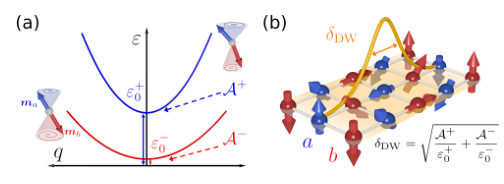
<figcaption class="paper-figure-caption"><b>Fig 1.</b> FIG. 1. (a) Schematic representation of the spin-wave spec- trum of a two-sublattice ferrimagnet, characterized by en- ergy modes ε± q with gaps ε± 0 and spin-wave stiffnesses A± ∝ ∂2 qε± q q=0. (b) Sketch of a domain-wall of width δDW in a two- sublattice ferrimagnet. The orange line indicates the transver- sal component of the sublattice magnetization.</figcaption>
</figure>
<figure class="paper-figure-card">
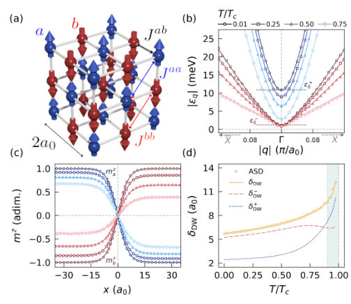
<figcaption class="paper-figure-caption"><b>Fig 2.</b> FIG. 2. (a) Sketch of the rock-salt–type magnet used in the atomistic spin model, illustrating ferrimagnetic (FI) ordering. (b) Spin-wave spectrum of the FI system near Γ along the ΓX direction (ΓX = π/a0) at selected reduced temperatures T/Tc. (c) Reduced sublattice magnetization mz r profiles at T/Tc. (d) DW width as a function of T/Tc. Symbols corre- spond to ASD simulations in panels (b-d). Solid lines indicate fits to the SW dispersion in (b) and the universal-relation val- ues from Eq. (1) in (c,d). The green-shaded area in (d) marks the region above the compensation temperature of the FI sys- tem.</figcaption>
</figure>
<figure class="paper-figure-card">
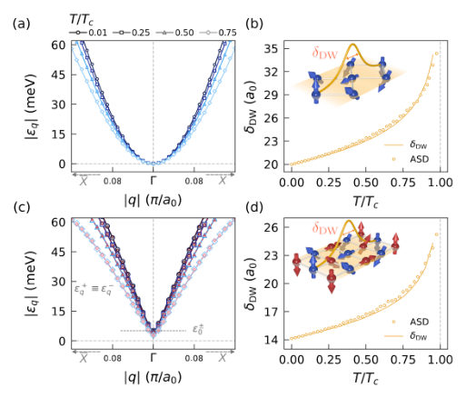
<figcaption class="paper-figure-caption"><b>Fig 3.</b> FIG. 3. Face-centered cubic ferromagnet: (a) Spin-wave spec- trum near Γ along ΓX direction at selected T/Tc. (b) DW width as a function of T/Tc. Simple cubic antiferromagnet: (c) Spin-wave spectrum near Γ along ΓX direction at selected T/Tc (b) DW width as a function of T/Tc. Symbols corre- spond to ASD simulations in all panels. Solid lines in (a,c) and in (b,d) indicate fits to the SW dispersion and values from the universal relation in Eq. (1), respectively. Panels (b, d) include a sketch of the DW profile for a slice of the system.</figcaption>
</figure>
<figure class="paper-figure-card">
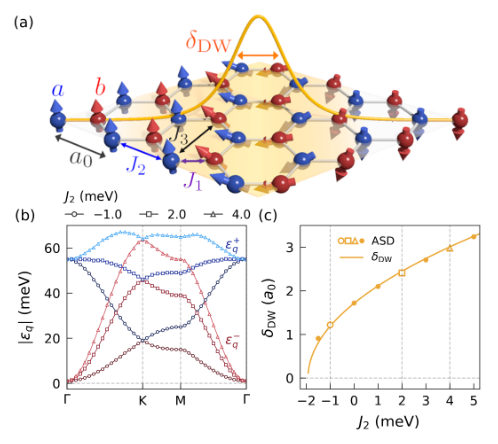
<figcaption class="paper-figure-caption"><b>Fig 4.</b> FIG. 4. (a) Sketch of a DW profile in a 2D honeycomb ferromagnet. (b) Spin-wave spectrum along the indicated high-symmetry path at zero temperature for selected values of J2. (c) DW width as a function of J2. Solid lines denote LSWT and analytical results for panels (b) and (c), respec- tively. Symbols correspond to ASD simulations; open symbols in (c) correspond to the selected cases shown in (b).</figcaption>
</figure>
<figure class="paper-figure-card">
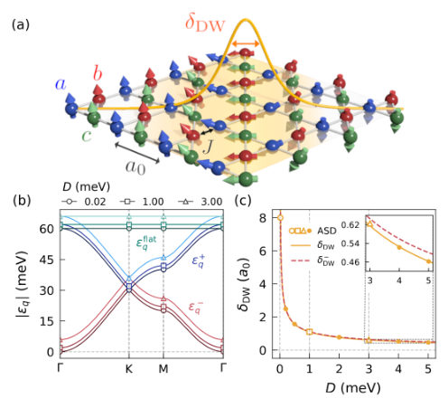
<figcaption class="paper-figure-caption"><b>Fig 5.</b> FIG. 5. (a) Sketch of a DW profile in a 2D kagome ferro- magnet. (b) Spin-wave spectrum along the indicated high- symmetry path at zero temperature for selected values of the uniaxial anisotropy D. Solid lines denote LSWT results and symbols serve as a visual guide. (c) δDW and δ− DW contribu- tion as a function of D. Solid lines correspond to analyti- cal results and symbols correspond to ASD simulations, open symbols correspond to the selected cases shown in (b). The inset shows a zoom of the region with high anisotropies.</figcaption>
</figure>
</div>

<p><strong>Summary.</strong> This work develops a universal theoretical framework to calculate the domain-wall width in complex multi-sublattice magnets, unifying descriptions for ferro-, antiferro-, and ferrimagnetic orders. The key method links the DW width directly to the parameters of the long-wavelength spin-wave dispersion. The results provide quantitative agreement with atomistic simulations, offering a powerful tool for understanding magnetic textures across diverse spin systems.</p>
<p><strong>Why it may be interesting.</strong> While focused on classical magnetism, the connection between macroscopic domain structure (DW width) and microscopic excitations (SW spectrum) is a fundamental problem in many-body dynamics, relevant to understanding thermal fluctuations in quantum magnetic materials.</p>
<details>
<summary>Detailed structure</summary>
<p><strong>Main problem.</strong> The paper aims to derive a universal expression for the domain-wall (DW) width in complex multi-sublattice Heisenberg magnets, applicable across different magnetic ordering types.</p>
<p><strong>Main result.</strong> A universal relation, $\delta_{DW} = \sqrt{A_{eta}/\epsilon_{eta}^0}$, is proposed that successfully unifies the description of DW width across ferromagnetic, antiferromagnetic, and ferrimagnetic systems.</p>
<p><strong>Method.</strong> The derivation relies on an exact theoretical connection between the DW profile and the long-wavelength spin-wave (SW) dispersion relation.</p>
<p><strong>Model / system.</strong> The study focuses on multi-sublattice Heisenberg magnets, modeled using Hamiltonians incorporating Heisenberg exchange and uniaxial anisotropy, tested on lattices like rock-salt, honeycomb, and kagome.</p>
<p><strong>Key observables.</strong> Domain-wall width ($\delta_{DW}$), spin-wave spectrum parameters (gaps $\epsilon_{\pm}^0$ and stiffnesses $A_{\pm}$), and the temperature dependence of $\delta_{DW}$.</p>
<p><strong>Important parameters / regimes.</strong> Exchange coupling constants ($J$), anisotropy constants ($D$), temperature ($T$), and the ratio $T/T_c$.</p>
<p><strong>Assumptions / limitations.</strong> The approach assumes the validity of connecting the DW profile to the long-wavelength spin-wave theory, and it analyzes the system up to the magnetic ordering transition ($T_c$).</p>
<p><strong>Figures summary.</strong> Figures illustrate the SW spectrum for various magnets, show the calculated DW width versus temperature, and display magnetization profiles confirming the theoretical predictions.</p>
<p><strong>Paper structure.</strong> The paper establishes the problem by noting the failure of simple models, introduces the universal relation derived from SW theory, applies it to various lattice types (FM, AFM, FI), and validates the results against atomistic spin dynamics simulations, including temperature dependence.</p>
</details>
<details>
<summary>Abstract</summary>
<p>We propose a universal expression for the domain-wall width in generic multi-sublattice Heisenberg magnets, applicable to ferro-, antiferro-, and ferrimagnetic orders. The result follows from an exact connection between the domain-wall profile and the long-wavelength spin-wave dispersion, yielding a unified framework for describing magnetic textures across distinct ordering types. The predictions show excellent quantitative agreement with large-scale atomistic spin dynamics simulations over a broad range of exchange and anisotropy values and spin multi-sublattice structures, including three-dimensional rock-salt-type magnets and two-dimensional honeycomb and kagome ferromagnets. Moreover, we establish a general microscopic foundation for the temperature dependence of the domain-wall width. Our approach offers a powerful tool for understanding domain-wall profiles in complex spin systems.</p>
</details>
<p><sub><a href="#top">↑ back to top</a></sub></p>

<p><a id="paper-2606.00744"></a></p>
<h3 id="edge-detection-framework-utilizing-sot-mtj-bit-cell-arrays"><a href="http://arxiv.org/abs/2606.00744v1">Edge Detection Framework Utilizing SOT-MTJ Bit-Cell Arrays</a></h3>
<p><strong>Authors:</strong> Kushagra Singh, Debasis Das<br>
<strong>Type:</strong> theory · <strong>Category:</strong> other · <strong>PDF:</strong> <a href="https://arxiv.org/pdf/2606.00744v1">https://arxiv.org/pdf/2606.00744v1</a><br>
<strong>Analysis basis:</strong> full PDF text, analyzed in chunks
<strong>Topic relevance:</strong> <code>spintronics-quantum-optics interface</code> <strong>1/5</strong></p>
<div class="figure-strip-hint">↔ Scroll figures horizontally</div>
<div class="paper-figures-scroll">
<figure class="paper-figure-card">
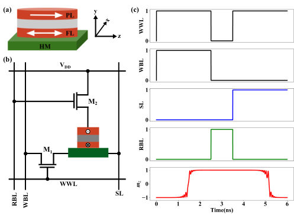
<figcaption class="paper-figure-caption"><b>Fig 1.</b> Fig. 1: (a) Schematic of the SOT-MTJ device, on top of the heavy-metal (HM) layer. (b) Schematic of the bit-cell of SOT- MTJ with the access transistors for the write, read, and reset mechanisms. (c) Variation of different signals across the bit- cell and the mz with time.</figcaption>
</figure>
<figure class="paper-figure-card">
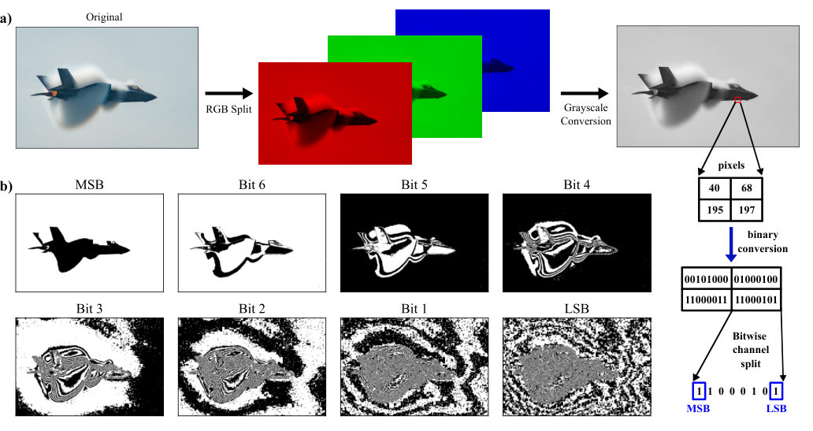
<figcaption class="paper-figure-caption"><b>Fig 2.</b> Fig. 2: (a) Preprocessing: Original image split to RGB channels, and converted to a single-channel grayscale image. A sample of 2×2 pixels demonstrating binary conversion and bit-wise channel split. (b) Splitting of the grayscale images according to unsigned 8-bit integer channels.</figcaption>
</figure>
<figure class="paper-figure-card">
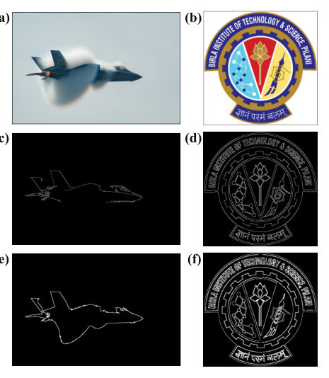
<figcaption class="paper-figure-caption"><b>Fig 3.</b> Fig. 4: Comparison between the proposed SOT-MTJ-based edge detection method and the conventional Canny algorithm. (a) and (b) show the original test images used for evaluation. (c) and (d) present the corresponding edge maps generated by Canny operator, (e) and (f) demonstrate the edge detected image using our SOT-MTJ based approach.</figcaption>
</figure>
<figure class="paper-figure-card">
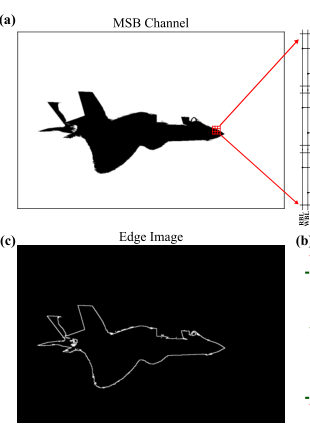
<figcaption class="paper-figure-caption"><b>Fig 4.</b> Fig. 3: (a) A 3×3 kernel (red squares) is convolved over the MSB channel of the image. Each pixel of the kernel is implemented using a SOT-MTJ bit cell along with two access transistors, shown in enlarged scale. (b) Electrical readout from the kernel, illustrating the three possible cur- rent levels—9IP for all-1 input (no edge), 9IAP for all-0 input (no edge), and intermediate summed current values for mixed inputs (edge detected). (c) The resulting binary edge image produced after thresholding the read current response, highlighting detected object boundaries in the original image.</figcaption>
</figure>
</div>

<p><strong>Summary.</strong> This paper proposes an energy-efficient hardware accelerator for edge detection by leveraging the switching properties of SOT-MTJ magnetic tunnel junctions. By mapping the convolution operation onto the read/write cycles of these spintronic cells, it achieves low latency and significantly reduced power consumption compared to conventional CMOS-based algorithms. This work demonstrates a viable path for integrating advanced memory devices into real-time image processing hardware.</p>
<p><strong>Why it may be interesting.</strong> While the core physics is spintronics/solid-state, the integration of device physics (LLGS, SOT) to solve a classical signal processing problem (edge detection) is highly relevant to emerging memory computing paradigms.</p>
<details>
<summary>Detailed structure</summary>
<p><strong>Main problem.</strong> Traditional edge detection algorithms are too computationally expensive and energy-intensive for resource-constrained hardware.</p>
<p><strong>Main result.</strong> The proposed spintronics-based approach using SOT-MTJ arrays achieves low-power, high-speed image processing, significantly outperforming standard methods like Canny detection.</p>
<p><strong>Method.</strong> The method involves converting color images to grayscale, splitting pixel values into bit channels, and then performing convolution using the switching characteristics of SOT-MTJ cells.</p>
<p><strong>Model / system.</strong> The system utilizes Magnetic Tunnel Junction (MTJ) devices integrated into an SOT-MTJ bit-cell array for in-memory computing. The physics is governed by the Landau-Lifshitz-Gilbert-Slonczewski (LLGS) equation, using Spin-Orbit Torque (SOT) for switching.</p>
<p><strong>Key observables.</strong> Energy consumption (e.g., $1.5 	ext{ fJ}$ read), latency ($\sim 6 	ext{ ns}$ cycle time), and the resulting binary edge map derived from read current thresholds.</p>
<p><strong>Important parameters / regimes.</strong> TMR (150%), $
ho_{HM}$ ($100 	ext{ } \mu\Omega	ext{-cm}$), and the specific current levels corresponding to '1' (high current) and '0' (low current) inputs.</p>
<p><strong>Assumptions / limitations.</strong> The read operation is designed to avoid read disturbance by applying a small voltage ($\sim 0.1 	ext{ V}$), and the analysis relies on specific material parameters for the MTJ structure.</p>
<p><strong>Figures summary.</strong> Figure 1 details the SOT-MTJ schematic and bit-cell operation. Figure 2 shows the image preprocessing pipeline (RGB to Grayscale to Bit Channels). Figure 3 illustrates the $3 	imes 3$ kernel convolution readout. Figure 4 compares the SOT-MTJ output against the conventional Canny output for test images.</p>
<p><strong>Paper structure.</strong> The paper first establishes the limitations of classical edge detection. It then details the physical model of the SOT-MTJ device, including its switching physics and operational cycles. The core contribution is the implementation of the edge detection algorithm using these devices, followed by a quantitative performance comparison against established methods.</p>
</details>
<details>
<summary>Abstract</summary>
<p>Traditional edge detection algorithms, foundational to computer vision, face significant challenges in energy efficiency and processing latency on conventional CMOS-based hardware. Existing algorithms, such as Canny, are computationally expensive, posing challenges in resource-constrained hardware where energy efficiency and low latency are critical. This study introduces a novel, hardware-efficient algorithm that leverages the intrinsic characteristics of magnetic tunnel junction (MTJ) devices. We present a detailed device-level analysis of an MTJ-based system for edge detection, outlining its operational cycles, including write, read, and reset methods. The algorithm's efficacy is evaluated against the standard Canny edge detection method. We provide a quantitative performance analysis, including metrics such as energy consumption and latency, which demonstrates that our proposed spintronics-based approach offers a promising solution for achieving low-power, high-speed image processing.</p>
</details>
<p><sub><a href="#top">↑ back to top</a></sub></p>

<p><a id="paper-2606.01201"></a></p>
<h3 id="enhanced-spin-to-charge-conversion-in-bi2se3nife-via-interface-engineering-with-a-ti-spacer-layer"><a href="http://arxiv.org/abs/2606.01201v1">Enhanced Spin-to-Charge Conversion in Bi2Se3/NiFe via Interface Engineering with a Ti Spacer Layer</a></h3>
<p><strong>Authors:</strong> Sourav Rajat Subhra Maitra, Poulami Manna, Ravi Prakash Singh, Chandrasekhar Murapaka, Arabinda Haldar<br>
<strong>Type:</strong> experiment · <strong>Category:</strong> other · <strong>PDF:</strong> <a href="https://arxiv.org/pdf/2606.01201v1">https://arxiv.org/pdf/2606.01201v1</a><br>
<strong>Analysis basis:</strong> full PDF text, analyzed in chunks
<strong>Topic relevance:</strong> <code>non-equilibrium dynamics</code> <strong>1/5</strong></p>
<div class="figure-strip-hint">↔ Scroll figures horizontally</div>
<div class="paper-figures-scroll">
<figure class="paper-figure-card">
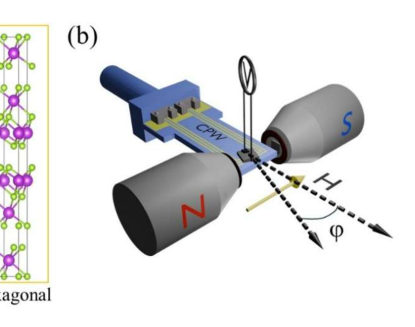
<figcaption class="paper-figure-caption"><b>Fig 1.</b> Figure 1: (a) Schematic diagram of spin-to-charge conversion in the heterostructure, with the</figcaption>
</figure>
<figure class="paper-figure-card">
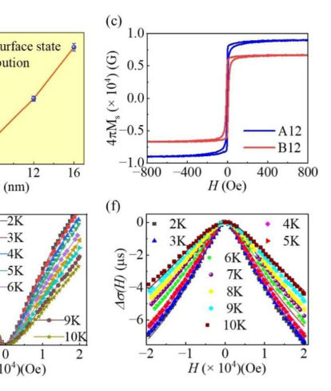
<figcaption class="paper-figure-caption"><b>Fig 2.</b> Figure 2: (a) The XRD pattern (-2 scan) of A12: Bi2Se3 (12)/Ti (3)/NiFe (10), B12: Bi2Se3</figcaption>
</figure>
<figure class="paper-figure-card">
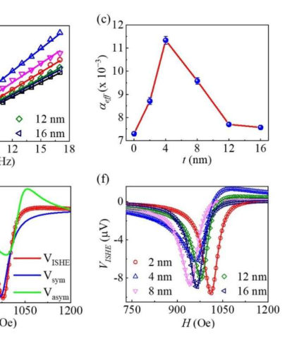
<figcaption class="paper-figure-caption"><b>Fig 3.</b> Figure 3: (a) FMR spectra at rf frequency of 9 GHz in the sample Bi2Se3 (t)/Ti (3)/NiFe (10),</figcaption>
</figure>
<figure class="paper-figure-card">

<figcaption class="paper-figure-caption"><b>Fig 4.</b> Figure 3(a) shows the FMR spectra of Bi2Se3 (t)/Ti (3)/NiFe (10), with t = 0, 2, 4, 8, 12, and</figcaption>
</figure>
<figure class="paper-figure-card">
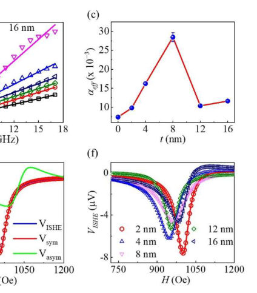
<figcaption class="paper-figure-caption"><b>Fig 5.</b> Figure 4: (a) FMR spectra at 9 GHz rf frequency in the sample Bi2Se3 (t)/NiFe (10), where t =</figcaption>
</figure>
</div>

<p><strong>Summary.</strong> This work investigates how to boost spin-to-charge conversion in topological insulator spintronic devices by engineering the interface. By introducing a titanium spacer layer between $   ext{Bi}_2   ext{Se}_3$ and $    ext{NiFe}$, the researchers successfully prevented material interdiffusion, leading to a dramatic, order-of-magnitude enhancement in the spin Hall angle. This highlights the critical role of interface chemistry in realizing high-efficiency topological spintronic devices.</p>
<p><strong>Why it may be interesting.</strong> While focused on condensed matter spintronics, the study's reliance on interface engineering, quantum confinement effects (surface states), and spin transport mechanisms (spin pumping) provides relevant experimental benchmarks for understanding open quantum systems dynamics at material interfaces.</p>
<details>
<summary>Detailed structure</summary>
<p><strong>Main problem.</strong> The primary goal is to enhance the spin-to-charge conversion efficiency in spintronic devices utilizing topological insulators.</p>
<p><strong>Main result.</strong> The insertion of a titanium spacer layer significantly enhances the spin Hall angle (SHA) by an order of magnitude compared to direct interfaces.</p>
<p><strong>Method.</strong> The study uses spin pumping measurements via Ferromagnetic Resonance (FMR) spectroscopy and measures the resulting transverse voltage using the Inverse Spin Hall Effect (ISHE).</p>
<p><strong>Model / system.</strong> The system is a sputter-deposited heterostructure: a topological insulator ($   ext{Bi}_2   ext{Se}_3$) coupled with a ferromagnetic film ($   ext{NiFe}$) separated by a titanium ($   ext{Ti}$) spacer layer, deposited on a silicon substrate.</p>
<p><strong>Key observables.</strong> Spin Hall Angle (SHA), Gilbert damping parameter ($\alpha_{	ext{eff}}$), ISHE voltage ($V_{	ext{ISHE}}$), and magnetoresistance ($\Delta\sigma(H)$).</p>
<p><strong>Important parameters / regimes.</strong> The optimal $   ext{Bi}_2   ext{Se}_3$ thickness appears to be around 4 nm, and the enhancement factor is an order of magnitude.</p>
<p><strong>Assumptions / limitations.</strong> The enhancement is attributed to the $   ext{Ti}$ spacer layer suppressing detrimental interdiffusion between the $  ext{Bi}_2   ext{Se}_3$ and $    ext{NiFe}$ layers, thereby preserving the topological surface states.</p>
<p><strong>Figures summary.</strong> Figures illustrate schematics of the spin-to-charge conversion setup, FMR spectra showing damping parameter changes with thickness, and ISHE voltage measurements comparing samples with and without the Ti spacer.</p>
<p><strong>Paper structure.</strong> The paper systematically compares spin-to-charge conversion in $   ext{Bi}_2   ext{Se}_3/  ext{NiFe}$ versus $ ext{Bi}_2   ext{Se}_3/  ext{Ti}/    ext{NiFe}$ structures, analyzing thickness dependence, quantifying the SHA, and attributing the improvement to interface protection.</p>
</details>
<details>
<summary>Abstract</summary>
<p>Topological insulators have attracted significant attention in spintronics due to their topological surface states and spin-momentum-locking-driven spin-to-charge conversion. Among these, Bi2Se3 has been extensively investigated because of its large bulk bandgap and single Dirac cone band structure. However, spin-to-charge conversion strongly depends on the quality of the topological insulator/ferromagnet interface. Here, we investigate spin-to-charge conversion in a sputter-deposited heterostructure comprising a topological insulator (Bi2Se3) and a ferromagnetic NiFe thin film separated by a titanium spacer layer. The Bi2Se3 layer is deposited on a silicon substrate for industrial compatibility. Pure spin current is injected into the Bi2Se3 layer through the titanium spacer via spin pumping induced by spin precession during microwave-driven ferromagnetic resonance of the ferromagnetic film. Spin pumping studies are performed by varying the Bi2Se3 thickness. The Gilbert damping parameter exhibits a significant 55% increase at a Bi2Se3 thickness of 4 nm, indicating a pure surface-state contribution. The spin Hall angle, which quantifies the spin-to-charge conversion efficiency, increases by an order of magnitude upon insertion of the titanium spacer layer. This enhancement is attributed to the suppression of interdiffusion between the Bi2Se3 and NiFe layers by titanium, thereby preserving the topological surface states. These findings highlight the important role of titanium spacer layers in spintronic devices based on topological materials.</p>
</details>
<p><sub><a href="#top">↑ back to top</a></sub></p>

<p><a id="paper-2606.01345"></a></p>
<h3 id="high-quality-nano-patterning-of-oxide-interfaces-using-transferred-gold-mask"><a href="http://arxiv.org/abs/2606.01345v1">High-quality Nano-patterning of Oxide Interfaces Using Transferred Gold Mask</a></h3>
<p><strong>Authors:</strong> Qing Xiao, Yanling Liu, Changjian Ma, Danqing Liu, Zhiyuan Qin, Qianyi Zhao, Chengyuan Huang, Mengke Ha, Zhenhao Li, Guanglei Cheng<br>
<strong>Type:</strong> experiment · <strong>Category:</strong> strongly correlated electrons · <strong>PDF:</strong> <a href="https://arxiv.org/pdf/2606.01345v1">https://arxiv.org/pdf/2606.01345v1</a><br>
<strong>Analysis basis:</strong> full PDF text, analyzed in chunks
<strong>Topic relevance:</strong> <code>analog quantum simulation</code> <strong>1/5</strong></p>
<div class="figure-strip-hint">↔ Scroll figures horizontally</div>
<div class="paper-figures-scroll">
<figure class="paper-figure-card">
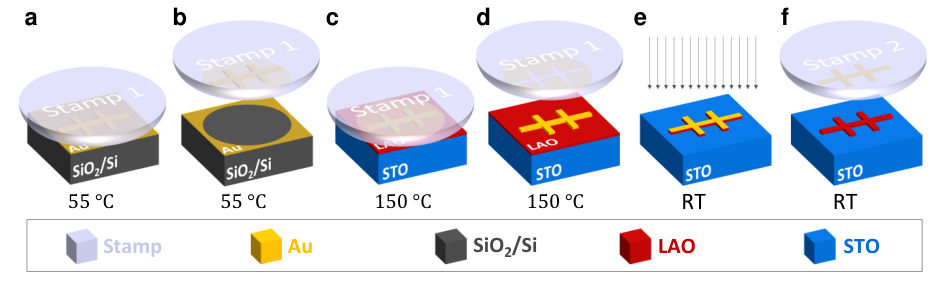
<figcaption class="paper-figure-caption"><b>Fig 1.</b> Figure 1: Illustration of an Au Hall bar mask transfer in the top-down patterning approach. (a,b) A stamp is used to pick up a pre-patterned Au Hall bar mask with the thin Au layer on SiO2/Si. (c,d) The Au Hall bar, along with the thin Au layer directly beneath it, is released on the LAO/STO sample. The thin Au layer outside the patterned area remains adhered to the stamp, thereby preventing direct contact between the stamp and the sample. (e) Oxygen-enriched Ar+ ion milling removes the exposed LAO. (f) A second stamp is used to pick up the Au mask on the LAO/STO.</figcaption>
</figure>
<figure class="paper-figure-card">

<figcaption class="paper-figure-caption"><b>Fig 2.</b> Figure 1a, 1b) at 55 ◦C. Subsequently, the Au pattern is released on LAO/STO at 150 ◦C,</figcaption>
</figure>
<figure class="paper-figure-card">
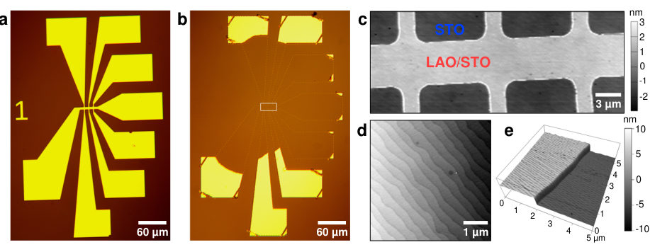
<figcaption class="paper-figure-caption"><b>Fig 3.</b> Figure 2: A Hall bar fabricated using a transferred Au mask in the top-down approach. (a) The transferred Au Hall bar pattern on LAO/STO. (b) The final LAO/STO Hall bar device. (c) AFM topography image of area highlighted within the white rectangle in (b). (d) AFM topography image of the surface of the Hall bar, preserving the atomic terraces of the pristine LAO/STO sample. (e) The abrupt edge between the device and the etched region.</figcaption>
</figure>
<figure class="paper-figure-card">

<figcaption class="paper-figure-caption"><b>Fig 4.</b> Figure 2a presents an optical micrograph of a transferred Au Hall bar structure (20 µm×</figcaption>
</figure>
<figure class="paper-figure-card">
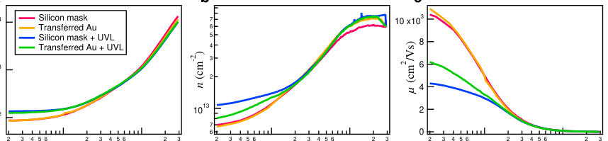
<figcaption class="paper-figure-caption"><b>Fig 5.</b> Figure 3: Temperature-dependent transport properties of patterned squares on Sample A: (a) sheet resistance Rs, (b) carrier density n, and (c) mobility µ as functions of temperature extracted from vdP measurement.</figcaption>
</figure>
</div>

<p><strong>Summary.</strong> This work introduces a novel, solvent-free nanofabrication technique for complex oxide interfaces using transferred gold masks and oxygen-enriched ion milling. The method successfully patterns oxide heterostructures while preserving their high electronic quality, enabling the creation of high-performance nanoscale electronic devices for studying correlated phenomena.</p>
<p><strong>Why it may be interesting.</strong> While the focus is on materials science, the ability to create highly controlled, clean nanoscale junctions in correlated oxides is crucial for realizing quantum devices, making the clean interface control relevant to quantum engineering.</p>
<details>
<summary>Detailed structure</summary>
<p><strong>Main problem.</strong> The primary challenge is achieving high-quality, clean, and controlled nano-patterning of complex oxide interfaces, which are highly susceptible to contamination and defect formation during fabrication.</p>
<p><strong>Main result.</strong> The developed solvent-free method using transferred gold masks and oxygen-enriched Ar+ milling successfully enables residue-free nanofabrication, preserving the intrinsic high carrier mobilities of the oxide interfaces.</p>
<p><strong>Method.</strong> The technique involves depositing and patterning a transferable gold mask, transferring it onto the oxide sample, and then using oxygen-enriched Ar+ ion milling to pattern the oxide layer.</p>
<p><strong>Model / system.</strong> The study focuses on complex oxide heterostructures, such as LAO/STO, which host rich correlated phenomena like 2DEG and metal-insulator transitions. The patterning is performed at the nanoscale to probe these intrinsic electronic properties.</p>
<p><strong>Key observables.</strong> High carrier mobilities ($\mu$), sheet resistance ($R_s$), carrier density ($n$), and surface topography confirmed by AFM.</p>
<p><strong>Important parameters / regimes.</strong> Feature sizes down to $\sim 100 	ext{ nm}$; $   ext{Ar}/    ext{O}_2$ gas mixture ratio (1:5); cryogenic temperatures (e.g., $2 	ext{ K}$).</p>
<p><strong>Assumptions / limitations.</strong> The method is assumed to be residue-free and that the patterned regions maintain the intrinsic electronic quality of the pristine interfaces.</p>
<p><strong>Figures summary.</strong> Figures illustrate the step-by-step Au mask transfer process (top-down approach) and show AFM images confirming pattern transfer and surface quality. Transport measurements compare the performance of devices patterned using the Au mask versus conventional methods.</p>
<p><strong>Paper structure.</strong> The paper details the fabrication process using transferred Au masks combined with oxygen-enriched Ar+ milling. It presents transport measurements comparing the resulting device performance against other patterning techniques, demonstrating the method's success in preserving high-quality electronic properties.</p>
</details>
<details>
<summary>Abstract</summary>
<p>Complex oxide interfaces, such as \mathrm{SrTiO_3} and \mathrm{KTaO_3} based heterostructures, host rich correlated phenomena with strong potential for advanced device applications. However, these interfaces are extremely susceptible to contamination and defect formation during nanofabrication, which often compromises device performance. Here, we present a solvent-free method for patterning oxide interfaces by employing high-resolution transferable thin metal masks in conjunction with oxygen-enriched Ar+ milling, which enables a clean and well-controlled nanofabrication process. Transport measurements demonstrate that the fabricated devices preserve their intrinsic properties, including high carrier mobilities, with negligible degradation compared to the pristine interfaces. This technique offers a convenient and robust route for engineering high-performance oxide electronic devices with precisely tailored transport characteristics.</p>
</details>
<p><sub><a href="#top">↑ back to top</a></sub></p>

<p><a id="paper-2606.01350"></a></p>
<h3 id="resonant-raman-scattering-in-bilayer-3r-mosmath1513math"><a href="http://arxiv.org/abs/2606.01350v1">Resonant Raman scattering in bilayer 3R-MoS$_{2}$</a></h3>
<p><strong>Authors:</strong> Chinmay K. Mohanty, Kacper Walczyk, Tomasz Woźniak, Chengcheng Jiang, Adam Babiński, Clement Faugeras, Zhaolong Chen, Maciej R. Molas<br>
<strong>Type:</strong> both · <strong>Category:</strong> other · <strong>PDF:</strong> <a href="https://arxiv.org/pdf/2606.01350v1">https://arxiv.org/pdf/2606.01350v1</a><br>
<strong>Analysis basis:</strong> full PDF text, analyzed in chunks
<strong>Topic relevance:</strong> <code>non-equilibrium dynamics</code> <strong>1/5</strong></p>
<div class="figure-strip-hint">↔ Scroll figures horizontally</div>
<div class="paper-figures-scroll">
<figure class="paper-figure-card">
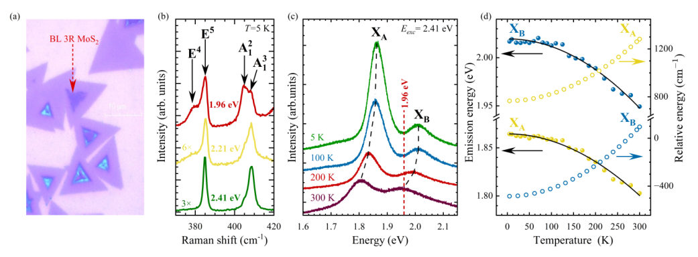
<figcaption class="paper-figure-caption"><b>Fig 1.</b> FIG. 1. (a) Optical microscopy image of a CVD-grown bilayer 3R-MoS2 flake, indicated by a red arrow. (b) Raman scattering spectra of bilayer 3R-MoS2 measured at 5 K using excitation energies of 1.96, 2.21, and 2.41 eV with an excitation power of 300 µW. (c) Temperature evolution of PL spectra obtained under 2.41 eV laser excitation. The black dashed lines denote the energies of the XA and XB lines. The vertical red dashed line indicates the energy of the 1.96 eV excitation. (d) Emission energies of XA (yellow) and XB (blue) as a function of temperature. Solid black curves represent Varshni fits, and open yellow and blue symbols correspond to the energies of XA and XB relative to the...</figcaption>
</figure>
<figure class="paper-figure-card">
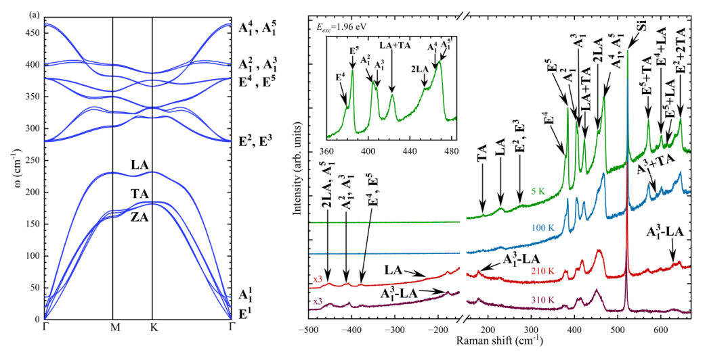
<figcaption class="paper-figure-caption"><b>Fig 2.</b> FIG. 2. (a) Calculated phonon dispersion of 3R-stacked MoS2 BL. Raman-active modes at the Γ point of the BZ are indicated. (b) Temperature evolution of the Stokes and anti-Stokes branches in high-resolution RS spectra measured under resonant excitation (1.96 eV) at T = 5, 100, 210, and 310 K. The assigned phonon peaks, including Raman-active and acoustic modes, as well as their combinations arising from higher-order processes, are labelled.</figcaption>
</figure>
<figure class="paper-figure-card">
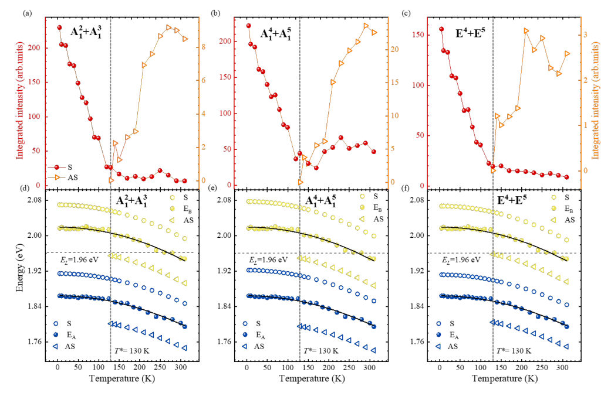
<figcaption class="paper-figure-caption"><b>Fig 3.</b> FIG. 3. Temperature evolution of the resonant Raman response of bilayer 3R-MoS2. Panels (a)–(c) show the integrated intensities of the Stokes (red points) and anti-Stokes (orange points) components for the A2 1 +A3 1, A4 1 +A5 1, and E4 +E5 modes, respectively. Note that the vertical axis ranges are adjusted to the maximum intensity of each phonon mode. Panels (d)–(f) present the corresponding Stokes and anti-Stokes scattering energies together with the XA and XB excitonic transitions. The horizontal dashed line denotes the excitation energy EL = 1.96 eV, while the solid black curves represent the Varshni fits of the excitonic transitions. The vertical dashed line marks the characteristic...</figcaption>
</figure>
<figure class="paper-figure-card">
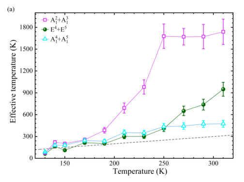
<figcaption class="paper-figure-caption"><b>Fig 4.</b> FIG. 4. (a) Effective temperature extracted using the Boltz- mann relation as a function of temperature for the A2 1 + A3 1, A4 1 + A5 1, and E4 + E5 modes.The grey dashed line represents the condition Teff = T, corresponding to the equality be- tween the effective and measured temperatures.</figcaption>
</figure>
</div>

<p><strong>Summary.</strong> This work uses resonant Raman spectroscopy to probe the temperature dependence of lattice dynamics in bilayer 3R-MoS2. By correlating changes in excitonic transitions with phonon scattering intensities, the authors demonstrate that the Raman response is dictated by resonant coupling rather than simple thermal equilibrium. This offers deep insight into exciton-phonon interactions in van der Waals materials.</p>
<p><strong>Why it may be interesting.</strong> The strong coupling between electronic excitations (excitons) and lattice vibrations (phonons) under resonant conditions provides a rich platform for studying non-equilibrium dynamics and energy transfer in low-dimensional quantum materials.</p>
<details>
<summary>Detailed structure</summary>
<p><strong>Main problem.</strong> The study investigates the temperature-dependent resonant Raman scattering response in bilayer 3R-MoS2, focusing on how excitonic resonances govern lattice dynamics.</p>
<p><strong>Main result.</strong> The resonant Raman response is strongly governed by the interplay between incoming and outgoing exciton resonances, leading to deviations from simple thermal population models, particularly in the anti-Stokes/Stokes intensity ratio.</p>
<p><strong>Method.</strong> The research combines multi-wavelength Raman spectroscopy, photoluminescence measurements, and DFT calculations to analyze temperature evolution.</p>
<p><strong>Model / system.</strong> The physical system is bilayer 3R-MoS2, a transition metal dichalcogenide. The analysis models temperature dependence using the Varshni relation for excitonic energy shifts and the Boltzmann relation for intensity ratios.</p>
<p><strong>Key observables.</strong> Raman intensity (Stokes/anti-Stokes), effective phonon temperature (T*), excitonic transition energies (XA and XB), and the temperature dependence of these quantities.</p>
<p><strong>Important parameters / regimes.</strong> Temperature range (5–310 K), excitation laser energies (e.g., 1.96 eV), and the material structure (3R stacking).</p>
<p><strong>Assumptions / limitations.</strong> The analysis assumes that the observed deviations in the intensity ratio are due to resonant scattering mechanisms rather than solely thermal population effects.</p>
<p><strong>Figures summary.</strong> Figures show optical microscopy, temperature evolution of PL spectra, and the energy dependence of XA/XB excitons. Other figures illustrate phonon dispersion, temperature-dependent Stokes/anti-Stokes intensities, and the effective temperature derived from the intensity ratio.</p>
<p><strong>Paper structure.</strong> The paper systematically analyzes the temperature dependence of excitons (Varshni fitting), then examines the resulting changes in the Stokes/anti-Stokes intensity ratio, culminating in the demonstration that resonance conditions dictate the observed phonon temperature.</p>
</details>
<details>
<summary>Abstract</summary>
<p>Raman scattering is a powerful spectroscopic technique widely employed to investigate light-matter interactions and lattice dynamics in two-dimensional materials. Here, we investigate the temperature-dependent resonant Raman response of bilayer 3R-MoS$_2$. The study combines multi-wavelength Raman spectroscopy, photoluminescence measurements, and density functional theory calculations to track the evolution of excitonic transitions and resonance conditions. We observe contributions from both zone-centre and finite-momentum phonons, a pronounced quenching of the Stokes intensity at low temperatures followed by saturation, the emergence of anti-Stokes scattering above 130~K, and a strong deviation of the effective phonon temperature from the lattice temperature induced by resonance effects. These results demonstrate that the Raman response is governed by the interplay between incoming and outgoing resonance processes, providing deeper insight into exciton-phonon coupling in van der Waals materials.</p>
</details>
<p><sub><a href="#top">↑ back to top</a></sub></p>
<h3 id="other-secondary-papers-5">Other secondary papers (5)</h3>
<details>
<summary>Show other secondary papers</summary>

<p><a id="paper-2606.01003"></a></p>
<h3 id="electronic-hall-viscosity-hidden-indicator-for-antiferromagnets"><a href="http://arxiv.org/abs/2606.01003v1">Electronic Hall viscosity: hidden indicator for antiferromagnets</a></h3>
<p><strong>Authors:</strong> Ding Li, Tao Qin, Jianhui Zhou<br>
<strong>Type:</strong> theory · <strong>Category:</strong> other · <strong>PDF:</strong> <a href="https://arxiv.org/pdf/2606.01003v1">https://arxiv.org/pdf/2606.01003v1</a><br>
<strong>Analysis basis:</strong> full PDF text, analyzed in chunks</p>
<div class="figure-strip-hint">↔ Scroll figures horizontally</div>
<div class="paper-figures-scroll">
<figure class="paper-figure-card">
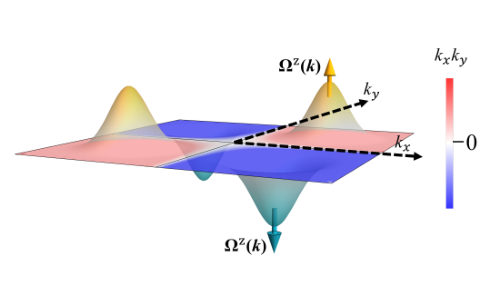
<figcaption class="paper-figure-caption"><b>Fig 1.</b> Figure 1. Schematic of the electronic Hall viscosity ηxyz = kxkyΩz(k) for systems with C4 symmetry on the kx-ky plane. The d-orbital function kxky is plotted on the plane. The colored peaks denote the Berry curvature Ωz(k) with the up/down arrow for the positive/negative sign, implying zero anomalous Hall conductivity.</figcaption>
</figure>
<figure class="paper-figure-card">
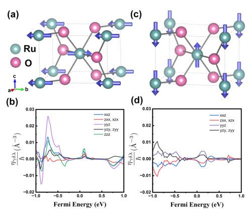
<figcaption class="paper-figure-caption"><b>Fig 2.</b> Figure 2. Two different magnetic configurations of the al- termagnet RuO2 with Néel vector L along (a) a-axis and (c) c-axis. (b) and (d) The corresponding EHV tensor versus the Fermi level.</figcaption>
</figure>
<figure class="paper-figure-card">
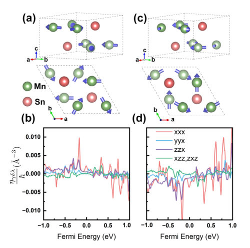
<figcaption class="paper-figure-caption"><b>Fig 3.</b> Figure 3. Magnetic structure of the noncollinear antifer- romagnets Mn3Sn and the calculated EHV tensor. (a) the type-III configuration of Mn3Sn and (b) selected nonzero com- ponents of the EHV. (c) the type-IV configuration of Mn3Sn and (d) selected nonzero components of the EHV.</figcaption>
</figure>
</div>
<p><strong>Summary.</strong> This work introduces the Electronic Hall Viscosity (EHV) as a novel, fundamental quantum geometric quantity to probe antiferromagnetism. It shows that EHV is related to the quadrupole Berry curvature and provides symmetry-dictated rules to detect magnetic order even when standard measurements fail. The theory is validated using DFT calculations on materials like RuO2 and Mn3Sn, offering a new design principle for spintronic devices.</p>
<p><strong>Why it may be interesting.</strong> While focused on condensed matter magnetism, the rigorous use of Berry curvature, symmetry analysis, and the introduction of a novel transport tensor (EHV) provides a sophisticated theoretical framework for characterizing quantum geometric properties in ordered magnetic systems.</p>
<details>
<summary>Detailed structure</summary>
<p><strong>Main problem.</strong> The paper addresses the challenge of detecting and characterizing the nontrivial Berry curvature in antiferromagnets, which is obscured by vanishing magnetization and anomalous Hall conductivity.</p>
<p><strong>Main result.</strong> Electronic Hall Viscosity (EHV) is proposed as a new, fundamental quantum geometry quantity that can characterize antiferromagnetic ordering even when the linear anomalous Hall response is forbidden.</p>
<p><strong>Method.</strong> The authors derive theoretical relationships between EHV and the quadrupole Berry curvature, establishing symmetry constraints using Magnetic Point Groups and calculating bounds using quantum volume moments.</p>
<p><strong>Model / system.</strong> The study focuses on generic antiferromagnets, exemplified by the d-wave altermagnet RuO2 and the noncollinear antiferromagnet Mn3Sn, analyzed using first-principle calculations.</p>
<p><strong>Key observables.</strong> Electronic Hall Viscosity (EHV, $\eta_{\gamma\delta\lambda}$), Berry curvature ($\Omega_{\alpha}$), and the quadrupole moment of the Berry curvature.</p>
<p><strong>Important parameters / regimes.</strong> The analysis involves symmetry operations (e.g., $C'<em 0 _omega="\omega" o>{n
u}$) and is applicable in the long-wavelength limit ($\lim</em>$).}\lim_{q o 0</p>
<p><strong>Assumptions / limitations.</strong> The derivation relies on classifying constraints using Magnetic Laue Groups (MLGs) and assumes the applicability of the theory to generic antiferromagnets.</p>
<p><strong>Figures summary.</strong> Figures illustrate the relationship between EHV components and symmetry operations for specific materials like RuO2 and Mn3Sn, showing how different magnetic configurations yield distinct, non-zero EHV tensors.</p>
<p><strong>Paper structure.</strong> The paper progresses from identifying the detection limitation in antiferromagnets to deriving the EHV as a diagnostic tool. It then establishes the mathematical relationship between EHV and the Berry curvature's quadrupole moment, derives symmetry constraints based on crystal/magnetic symmetries, and finally validates these findings using DFT calculations on model materials.</p>
</details>
<details>
<summary>Abstract</summary>
<p>The antiferromagnets with negligible stray fields and ultrafast spin dynamics play a crucial role in the fields of energy-efficient spintronics and topological electronics. However, the detection and control of the underlying nontrivial Berry curvature become extremely limited by the vanishing magnetization and anomalous Hall conductivity. Here, we show the electronic Hall viscosity is closely related to the quadruple Berry curvature of Bloch bands and is bounded by the $d$-orbit factor modulated second moment of the quantum volume. Moreover, we derive the symmetry requirement for nonzero electronic Hall viscosity that could characterize antiferromagnetic ordering even when the linear anomalous Hall response gets forbidden. We further examine our key findings in two archetypal antiferromagnets: $d$-wave altermagnet $\mathrm{RuO}_{2}$, and noncollinear $\mathrm{Mn_{3}Sn}$ through direct first-principle calculations. Thus, our work reveals a new and fundamental quantum geometry quantity of generic antiferromagnets and offers a broadly applicable way to design antiferromagnetic spintronics devices via unconventional Hall viscosity.</p>
</details>
<p><sub><a href="#top">↑ back to top</a></sub></p>

<p><a id="paper-2606.02174"></a></p>
<h3 id="physically-motivated-primitive-path-analysis-of-entangled-polymer-networks"><a href="http://arxiv.org/abs/2606.02174v1">Physically-Motivated Primitive Path Analysis of Entangled Polymer Networks</a></h3>
<p><strong>Authors:</strong> B M Shahi Sifat Mottaqin, Benjamin Morrow, Robert J. Wagner<br>
<strong>Type:</strong> theory · <strong>Category:</strong> statistical mechanics · <strong>PDF:</strong> <a href="https://arxiv.org/pdf/2606.02174v1">https://arxiv.org/pdf/2606.02174v1</a><br>
<strong>Analysis basis:</strong> full PDF text, analyzed in chunks</p>
<div class="figure-strip-hint">↔ Scroll figures horizontally</div>
<div class="paper-figures-scroll">
<figure class="paper-figure-card">
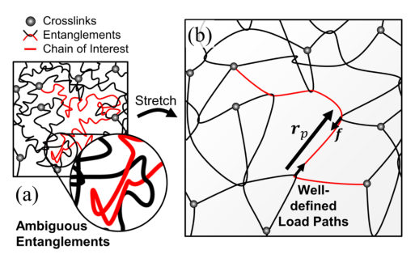
<figcaption class="paper-figure-caption"><b>Fig 1.</b> FIG. 1. Primitive Paths. (a-b) Illustrations of a 2D, crosslinked polymer network at (a) low and (b) high biax- ial stretch. (a) Close up of a highly coiled entanglement il- lustrates the topological ambiguity of entanglements at low stretch. (b) A primitive path vector, rp, between two entan- glements is denoted along with the corresponding chain force, f, acting at the entanglements. Load paths are relatively in- tuitive to identify in highly stretched networks.</figcaption>
</figure>
<figure class="paper-figure-card">

<figcaption class="paper-figure-caption"><b>Fig 2.</b> FIG. 2. Primitive Path Distillation of Entangled Polymer Networks. For any highly entangled polymer network modeled using CGMD (left), local entanglements may be algorithmically identified (center), so that the network may be distilled into a representative, reduced-order DNM (right).</figcaption>
</figure>
<figure class="paper-figure-card">

<figcaption class="paper-figure-caption"><b>Fig 3.</b> FIG. 3. Characterizing Entanglements. (a) Vector con- vention for computing Θ. (b) Interpretation of the Gaussian linking number, Θ. (c) Vector convention for computing xc.</figcaption>
</figure>
<figure class="paper-figure-card">

<figcaption class="paper-figure-caption"><b>Fig 4.</b> FIG. 4. Visualizing the COE. (a) Benchmark case in which N1 = N2 = 20, all chain ends are in xy-plane, and Θ ≈1. (b) Stochastically generated system with N1 = 62 and N2 = 60 for which the COE is less intuitive. The color map in both panels denotes the local weighting, ϑij of each segment to the overall linking number. For visual clarity, the red and blue curves of the insets illustrate the distinct paths of chains 1 and 2, respectively.</figcaption>
</figure>
<figure class="paper-figure-card">

<figcaption class="paper-figure-caption"><b>Fig 5.</b> FIG. 5. Defining local entanglements. The procedu- ral algorithm for identifying local entanglements along the backbone of chains is outlined, along with visualizations for each step from actual CGMD networks. Instances of both in- tramolecular (left) and intermolecular (right) entanglements are depicted. Step 1: Define CGMD network and assign molecule numbers to each chain. Step 2: Identify set of prox- imity pairs, P(i, j), within distance dc of one another. Color bar represents normalized inverse distance to closest nearest neighbor, b/dij. Step 3: Compute ϑij for all segment pairs i →i + 1 and j →j + 1. Step 4: Smooth ϑij over a window of length ℓw. Steps 5-6: Compute xc and Θ for each...</figcaption>
</figure>
</div>
<p><strong>Summary.</strong> This work develops a novel, computationally efficient method to model entangled polymer networks by distilling complex Coarse-Grained Molecular Dynamics (CGMD) data into simplified Discrete Network Models (DNMs). By quantifying local entanglements using the Gaussian Linking Number, the authors create a predictive framework that accurately predicts mechanical stress while drastically reducing computational cost.</p>
<p><strong>Why it may be interesting.</strong> While focused on polymer physics, the methodology of distilling complex, high-dimensional dynamics (CGMD) into a low-dimensional, predictive topological model (DNM) shares conceptual parallels with coarse-graining techniques used in many-body quantum systems.</p>
<details>
<summary>Detailed structure</summary>
<p><strong>Main problem.</strong> The primary challenge is relating the microscopic physics of transient polymer entanglements to the macroscopic mechanical properties of elastomers and gels.</p>
<p><strong>Main result.</strong> The proposed Discrete Network Model (DNM) successfully reproduces the small-strain virial stress predictions of the full CGMD model with a 97% reduction in computational cost.</p>
<p><strong>Method.</strong> The authors introduce a topological distillation algorithm that converts detailed CGMD simulations into simplified DNMs by identifying load-transmitting primitive paths using the Gaussian Linking Number and a Center of Entanglement.</p>
<p><strong>Model / system.</strong> The system is entangled polymer networks (elastomers/gels) modeled using Coarse-Grained Molecular Dynamics (CGMD) simulations based on the Kremer-Grest model. The analysis focuses on topological constraints (entanglements) and their mechanical consequences.</p>
<p><strong>Key observables.</strong> Gaussian Linking Number ($\Theta$), Geometric Center of Entanglement (COE), virial stress ($\sigma$), and the alignment of time-averaged chain forces ($\langle\hat{f} \cdot \hat{r}_p
angle$).</p>
<p><strong>Important parameters / regimes.</strong> Packing fraction ($\phi$), Kuhn length ($b$), and the ratio of simulation time to relaxation time ($ar{	au}_R$).</p>
<p><strong>Assumptions / limitations.</strong> The COE is hypothesized to be the physical location through which entropic chain forces are transmitted, and the DNM accurately captures the essential mechanical physics despite neglecting full chain sliding.</p>
<p><strong>Figures summary.</strong> Figures illustrate the distillation process from CGMD to DNM, show the alignment of entropic forces along primitive paths, and compare stress-strain curves between the two models at different stretches.</p>
<p><strong>Paper structure.</strong> The paper progresses by first defining the physical problem (entanglement ambiguity), developing the quantitative tools (GLN, COE), applying these tools to define local entanglements and primitive paths, and finally validating the resulting reduced-order DNM against full CGMD simulations for mechanical prediction.</p>
</details>
<details>
<summary>Abstract</summary>
<p>Physical entanglements between polymer chains enhance the moduli, strength, and toughness of elastomers and gels, yet relating entanglement micromechanics to macroscopic mechanical benefits remains difficult. Experimentally investigating entanglements is challenging due to their nanoscale sizes, subsurface locations, and chemical indistinguishability from their surroundings. Computationally mapping structure-property relations is costly when using physics-based models that enable direct entanglement observation, such as coarse-grained molecular dynamics (CGMD). Entanglements are also transient, configuration-dependent features without clear quantitative definitions. To address this ambiguity, we introduce an approach that quantitatively defines local entanglements along simulated polymer backbones using the Gaussian Linking Number, and introduce a geometric center of entanglement verified to represent the position through which entropic chain forces are transmitted via Kremer-Grest CGMD simulations. Unlike existing approaches, which output a single linking number for chain pairs, our method identifies the multitude of load-transmitting inter- and intra-chain entanglements along a polymer's backbone. To bridge scales, we introduce a topological distillation algorithm that converts entangled CGMD networks into representative discrete network models (DNMs), representing entanglements as vertices and primitive paths as load-transmitting edges. Our DNMs reproduce small-strain virial stress predictions of the Kremer-Grest model with a 97% reduction in computational cost, verifying both physical accuracy and computational efficiency. This distillation procedure will facilitate physics-based, predictive modeling of entangled network mechanics, from polymers to architected metamaterials.</p>
</details>
<p><sub><a href="#top">↑ back to top</a></sub></p>

<p><a id="paper-2606.02297"></a></p>
<h3 id="quantized-conductance-through-surface-states-in-high-quality-three-dimensional-dirac-semimetal-cdmath1528mathasmath1529math-nanowirenanoribbon-p-n-junctions"><a href="http://arxiv.org/abs/2606.02297v1">Quantized Conductance through Surface States in High Quality Three-Dimensional Dirac Semimetal Cd$_3$As$_2$ Nanowire/Nanoribbon p-n Junctions</a></h3>
<p><strong>Authors:</strong> Sungjin An, Zhuo Bin Siu, Vardan Kaladzhyan, Jens H. Bardarson, Sunghun Lee, Myoung-Jae Lee, Kidong Park, Jeunghee Park, Mansoor B. A. Jalil, Jungpil Seo, Minkyung Jung<br>
<strong>Type:</strong> both · <strong>Category:</strong> other · <strong>PDF:</strong> <a href="https://arxiv.org/pdf/2606.02297v1">https://arxiv.org/pdf/2606.02297v1</a><br>
<strong>Analysis basis:</strong> full PDF text, analyzed in chunks</p>
<div class="figure-strip-hint">↔ Scroll figures horizontally</div>
<div class="paper-figures-scroll">
<figure class="paper-figure-card">

<figcaption class="paper-figure-caption"><b>Fig 1.</b> Figure 1. (a) Transmission electron microscopy (TEM) image of 3D Dirac semimetal Cd3As2</figcaption>
</figure>
<figure class="paper-figure-card">

<figcaption class="paper-figure-caption"><b>Fig 2.</b> Figure 1(e) presents the differential conductance, G, of Device A measured as a function of the</figcaption>
</figure>
<figure class="paper-figure-card">

<figcaption class="paper-figure-caption"><b>Fig 3.</b> Figure 2. Four-terminal differential conductance map of Device A as a function of VL and VR</figcaption>
</figure>
<figure class="paper-figure-card">

<figcaption class="paper-figure-caption"><b>Fig 4.</b> Figure 3. (a) Four-terminal Cd3As2 nanowire device with recessed bottom gates (Device B).</figcaption>
</figure>
<figure class="paper-figure-card">

<figcaption class="paper-figure-caption"><b>Fig 5.</b> Figure 4. (a) Conductance measured in Device C at B = 8 T. The inset show a SEM image of</figcaption>
</figure>
</div>
<p><strong>Summary.</strong> This paper reports on the observation of quantized conductance in Cd3As2 Dirac semimetal nanostructures, using suspended p-n junctions. By comparing conductance plateaus in different geometries, the authors distinguish between spin-resolved subband transport ($1e^2/h$) and surface-state-dominated conduction ($2e^2/h$). The findings establish the material as a promising platform for quantum electronics.</p>
<p><strong>Why it may be interesting.</strong> The work provides experimental evidence of quantum transport phenomena (quantization, MR) in a topological material, linking macroscopic transport measurements to underlying electronic band structure physics (Dirac/Weyl fermions).</p>
<details>
<summary>Detailed structure</summary>
<p><strong>Main problem.</strong> The study aims to observe and characterize quantized conductance in high-quality three-dimensional Dirac semimetal Cd3As2 nanowire/nanoribbon p-n junctions.</p>
<p><strong>Main result.</strong> The conductance quantization exhibits different plateaus ($1e^2/h$ vs $2e^2/h$) depending on the nanostructure width, suggesting spin-resolved subband transport in narrower devices and surface-state-dominated conduction generally.</p>
<p><strong>Method.</strong> The research combines low-temperature, high-field transport measurements (four-terminal geometry) with detailed numerical simulations based on a low-energy effective Hamiltonian.</p>
<p><strong>Model / system.</strong> The physical system is Cd3As2, a 3D Dirac semimetal, fabricated into suspended nanowire/nanoribbon p-n junctions. The theoretical modeling uses a low-energy effective Hamiltonian incorporating orbital and Zeeman effects.</p>
<p><strong>Key observables.</strong> Quantized conductance plateaus at integer multiples of $e^2/h$ or $2e^2/h$, Magnetoresistance (MR) measurements (positive for $\vec{E}\perp\vec{B}$, negative for $\vec{E}\parallel\vec{B}$), and extracted effective Landé $g$-factor ($\sim 43$).</p>
<p><strong>Important parameters / regimes.</strong> Low temperature ($T \approx 2	ext{ K}$), high magnetic fields ($ ext{B} = 9  ext{ T}$), and geometric confinement (nanowire vs. wide nanoribbon).</p>
<p><strong>Assumptions / limitations.</strong> The analysis assumes that the observed quantization is dominated by surface states, and the use of four-terminal measurements successfully eliminates contact resistance effects.</p>
<p><strong>Figures summary.</strong> Figures show TEM images of the material, SEM images of the fabricated suspended devices, and differential conductance maps/plots illustrating the quantized conductance plateaus and magnetoresistance dependence on magnetic field.</p>
<p><strong>Paper structure.</strong> The paper details the experimental setup (device fabrication, transport measurements) to observe quantized conductance and MR in Cd3As2 junctions. It then uses theoretical modeling and simulation results to interpret the observed differences in quantization plateaus ($1e^2/h$ vs $2e^2/h$) based on confinement effects and surface state physics.</p>
</details>
<details>
<summary>Abstract</summary>
<p>We report the observation of quantized conductance in high-mobility three-dimensional Dirac semimetal Cd$_3$As$_2$ nanowire and nanoribbon p-n junctions. By employing suspended device geometries with dual local gates, we form tunable p-n junctions and realize ballistic transport across sub-micron channel lengths. In a wide nanoribbon device with a channel width of $\sim 330$ nm, conductance plateaus appear at integer multiples of $2e^2/h$ in the n-n regime under high magnetic fields. Numerical simulations suggest that these features represent unresolved spin-split subbands due to the smaller subband spacing in wider channels, and support the interpretation that the observed quantization may originate from surface-state-dominated conduction. In contrast, narrower nanoribbons and nanowires exhibit conductance steps of $1e^2/h$, demonstrating spin-resolved subbands likely due to enhanced confinement effects. From spin-resolved subband spectroscopy, we extract an effective Landé $g$-factor of $\sim 43$ for the first subband in the bulk gap, establishing these nanostructures as a prospective platform for fault-tolerant quantum electronics.</p>
</details>
<p><sub><a href="#top">↑ back to top</a></sub></p>

<p><a id="paper-2606.01404"></a></p>
<h3 id="quantized-orbital-and-spin-hall-transport-interplay-between-math1550math-hybridization-altermagnetism-and-spin-orbit-coupling"><a href="http://arxiv.org/abs/2606.01404v1">Quantized orbital and spin Hall transport: interplay between $sp$-hybridization, altermagnetism and spin-orbit coupling</a></h3>
<p><strong>Authors:</strong> Saikat Saha, Banasree Sadhukhan, Tanay Nag<br>
<strong>Type:</strong> theory · <strong>Category:</strong> other · <strong>PDF:</strong> <a href="https://arxiv.org/pdf/2606.01404v1">https://arxiv.org/pdf/2606.01404v1</a><br>
<strong>Analysis basis:</strong> full PDF text, analyzed in chunks</p>
<div class="figure-strip-hint">↔ Scroll figures horizontally</div>
<div class="paper-figures-scroll">
<figure class="paper-figure-card">

<figcaption class="paper-figure-caption"><b>Fig 1.</b> FIG. 1. Band Structure (a) with the distribution of ⟨Lz⟩and (b) with the distribution of ⟨Sz⟩, computed from the model Hamiltonian H. The inset plot in (a) shows the Fermi surface contour for Fermi energy EF = 0.1 eV with distribution of ⟨Sz⟩in units of ℏand the inset plot of (b) shows the Fermi surface contour for Fermi energy EF = 0.075 eV with distri- bution of ⟨Sz⟩. We consider ∆= 1 eV and γ = 0.25 eV with JA = 1 eV, λR = 0 eV in (a) and JA = 0 eV, λR = 0.1 eV in (b).</figcaption>
</figure>
<figure class="paper-figure-card">

<figcaption class="paper-figure-caption"><b>Fig 2.</b> FIG. 2. Variation of orbital Hall (OH) conductivities with Fermi energy EF is shown in (a) and (b), respectively, for different values of altermagnetic strength JA and the onsite energy ∆. We consider λR = 0.</figcaption>
</figure>
<figure class="paper-figure-card">

<figcaption class="paper-figure-caption"><b>Fig 3.</b> FIG. 3. Variation of spin Hall (SH) conductivities with Fermi energy EF is shown in (a) and (b), respectively, for different values of SOC λR and the on-site orbital energy ∆. We con- sider JA = 0.</figcaption>
</figure>
<figure class="paper-figure-card">

<figcaption class="paper-figure-caption"><b>Fig 4.</b> FIG. 4. Variation of OH conductivity with EF for different values of temperature is shown in (a). The Orbital Nernst (ON) conductivity for different values of JA with respect to the Fermi energy is displayed in (b).</figcaption>
</figure>
<figure class="paper-figure-card">

<figcaption class="paper-figure-caption"><b>Fig 5.</b> FIG. 5. Variation of SH conductivity with EF for different values of temperature is shown in (a). The spin Nernst (SN) conductivity for different values of λR with respect to the Fermi energy is displayed in (b).</figcaption>
</figure>
</div>
<p><strong>Summary.</strong> This theoretical work explores quantized orbital and spin Hall transport in 2D materials by modeling the interplay between $sp$-hybridization, altermagnetism, and SOC. The key finding is that the Hall responses become quantized over a specific Fermi energy window when magnetic order is tuned relative to hybridization scales. This quantization is microscopically rooted in the Berry curvature of the occupied electronic states.</p>
<p><strong>Why it may be interesting.</strong> The focus on topological transport phenomena (Hall effects) driven by orbital and spin degrees of freedom, and the explicit modeling of hybridization and magnetic order, connects to modern condensed matter physics research areas.</p>
<details>
<summary>Detailed structure</summary>
<p><strong>Main problem.</strong> The paper investigates the emergence and quantization of orbital and spin Hall effects in systems beyond standard L-S coupling, focusing on the interplay between $sp$-hybridization, altermagnetism (AM) order, and spin-orbit coupling (SOC).</p>
<p><strong>Main result.</strong> Quantized orbital and spin Hall responses are found when the AM order strength is tuned relative to the $sp$-hybridization scale, with the quantization being robustly linked to Fermi surface-activated Berry curvatures.</p>
<p><strong>Method.</strong> The study employs theoretical calculations using a two-dimensional model Hamiltonian to compute orbital and spin Berry curvatures and corresponding Hall/Nernst conductivities.</p>
<p><strong>Model / system.</strong> The model is a 2D Hamiltonian incorporating $sp$-hybridization, Rashba SOC ($\lambda_R$), and AM order ($J_A$) in a basis set spanning orbital and spin degrees of freedom.</p>
<p><strong>Key observables.</strong> Orbital Hall (OH) and Spin Hall (SH) conductivities ($\sigma_{OH}, \sigma_{SH}$), and Orbital/Spin Nernst coefficients ($\sigma_{ON}, \sigma_{SN}$).</p>
<p><strong>Important parameters / regimes.</strong> AM order strength ($J_A$), Rashba SOC ($\lambda_R$), $sp$-hybridization strength ($\gamma$), and Fermi energy ($E_F$).</p>
<p><strong>Assumptions / limitations.</strong> The analysis relies on a two-dimensional model Hamiltonian and assumes the quantization mechanism is governed by Fermi surface-activated Berry curvatures.</p>
<p><strong>Figures summary.</strong> Figures illustrate band structures showing angular momentum distributions, and plots show the quantized plateau structures of OH and SH conductivities as functions of Fermi energy and various coupling strengths.</p>
<p><strong>Paper structure.</strong> The paper systematically analyzes the Hamiltonian, calculates the relevant Berry curvatures, and then computes the transport coefficients ($\sigma_{OH}, \sigma_{SH}, \sigma_{ON}, \sigma_{SN}$) across different parameter regimes to demonstrate the quantization.</p>
</details>
<details>
<summary>Abstract</summary>
<p>We here explore the emergence of orbital and spin Hall effects, originating beyond the $L$-$S$ coupling, and investigate the interplay between inter-orbit hybridization, relativistic Rashba spin-orbit coupling (SOC), and non-relativistic SOC, namely altermagnetic (AM) order, in a two-dimensional model Hamiltonian. The orbital (spin) Hall responses are remarkably found to be quantized within a window of Fermi energy when the strength of AM order (Rashba SOC) exceeds (falls below) the scale set by $sp$-hybridization. Importantly, orbital and spin Hall quantizations are independent of Rashba SOC and AM order, respectively, while the uniform profiles of finite orbital and vanishingly small spin moments of bands around the Fermi energy. The microscopic origin of such quantization comes from the Fermi surface-activated orbital and spin Berry curvatures. The extent of the quantized regime is strongly controlled by the intra-orbital coupling strength. As the temperature increases, the quantization is significantly compromised in the spin Hall case. We extend our analysis to the orbital and spin Nernst coefficients where the pronounced dip-peak structures signal the existence of the quantization leading to experimental relevance.</p>
</details>
<p><sub><a href="#top">↑ back to top</a></sub></p>

<p><a id="paper-2606.00894"></a></p>
<h3 id="structure-composition-and-high-field-superconductivity-in-metal-rich-math1568math-carbide-type-compounds"><a href="http://arxiv.org/abs/2606.00894v1">Structure, Composition, and High-Field Superconductivity in Metal-Rich $\mathrmη$-Carbide-Type Compounds</a></h3>
<p><strong>Authors:</strong> Manuele Balestra, KeYuan Ma, Harald O. Jeschke, Fabian O. von Rohr<br>
<strong>Type:</strong> both · <strong>Category:</strong> strongly correlated electrons · <strong>PDF:</strong> <a href="https://arxiv.org/pdf/2606.00894v1">https://arxiv.org/pdf/2606.00894v1</a><br>
<strong>Analysis basis:</strong> full PDF text, analyzed in chunks</p>
<div class="figure-strip-hint">↔ Scroll figures horizontally</div>
<div class="paper-figures-scroll">
<figure class="paper-figure-card">

<figcaption class="paper-figure-caption"><b>Fig 1.</b> FIG. 1. Crystal structure of the η-carbide–type compounds with space group Fd3m. (a) Cubic unit</figcaption>
</figure>
<figure class="paper-figure-card">

<figcaption class="paper-figure-caption"><b>Fig 2.</b> FIG. 2. Overview of known η-carbide–type compounds with composition A4B2X, organized by</figcaption>
</figure>
<figure class="paper-figure-card">

<figcaption class="paper-figure-caption"><b>Fig 3.</b> FIG. 3. Superconducting properties of Zr4Pd2O, Ti4Ir2O, Ta4Rh2C1−δ, and Nb4Rh2C1−δ. (a) nor-</figcaption>
</figure>
<figure class="paper-figure-card">

<figcaption class="paper-figure-caption"><b>Fig 4.</b> FIG. 4. Upper critical field behavior and high-field thermodynamic signatures in η-carbide–type</figcaption>
</figure>
<figure class="paper-figure-card">

<figcaption class="paper-figure-caption"><b>Fig 5.</b> FIG. 5. Pressure-dependent superconducting properties of η-carbide–type compounds. (a) Nor-</figcaption>
</figure>
</div>
<p><strong>Summary.</strong> This review synthesizes research on $\eta$-carbide superconductors, highlighting their structural tunability and unusual superconducting properties. The core focus is explaining why their upper critical fields often exceed theoretical limits, pointing towards strong electronic correlations and symmetry-protected pairing mechanisms. The combination of experimental measurements and advanced DFT calculations provides a comprehensive picture of this fascinating class of quantum materials.</p>
<p><strong>Why it may be interesting.</strong> The investigation into Pauli-limit violation and the role of SOC in determining $H_{c2}$ is highly relevant to understanding unconventional superconductivity, a key area in condensed matter physics.</p>
<details>
<summary>Detailed structure</summary>
<p><strong>Main problem.</strong> The paper reviews the superconducting properties of $\eta$-carbide-type compounds, focusing on understanding the mechanisms behind their high upper critical fields ($H_{c2}$) which often violate the weak-coupling Pauli limit.</p>
<p><strong>Main result.</strong> These materials exhibit superconductivity governed by complex electronic structures, and the large $H_{c2}$ values suggest unconventional pairing mechanisms, potentially involving strong spin-orbit coupling or multiband superconductivity.</p>
<p><strong>Method.</strong> The work combines systematic experimental characterization (transport, magnetization, specific heat) with advanced theoretical calculations, including DFT incorporating spin-orbit coupling (SOC) and $k_p$ theory.</p>
<p><strong>Model / system.</strong> The physical system is the $\eta$-carbide-type compound ($A_4B_2X$), a class of metal-rich quantum materials with high crystallographic symmetry ($Fdar{3}m$). The electronic structure is complex, featuring multiple $d$ bands near the Fermi level.</p>
<p><strong>Key observables.</strong> Superconducting transition temperature ($T_c$), upper critical field ($H_{c2}(0)$), specific-heat jump ($\Delta C/\gamma T_c$), and the effective electronic $g$-factor.</p>
<p><strong>Important parameters / regimes.</strong> The Pauli paramagnetic limit ($\mu_0H_{	ext{Pauli}}$), crystal symmetry, and the degree of spin-orbit coupling (SOC).</p>
<p><strong>Assumptions / limitations.</strong> The analysis often assumes the applicability of BCS theory modified by strong coupling or that the observed $H_{c2}$ enhancement is due to SOC or FFLO states.</p>
<p><strong>Figures summary.</strong> Figures illustrate the crystal structure, map the chemical phase space of superconductors, and show $H_{c2}(T)$ curves, often comparing experimental data against the theoretical Pauli limit.</p>
<p><strong>Paper structure.</strong> The paper follows a review structure, first introducing the material class and synthesis challenges, then detailing superconducting diagnostics ($T_c, H_{c2}$), and finally delving into theoretical explanations for the high critical fields using DFT and advanced pairing models.</p>
</details>
<details>
<summary>Abstract</summary>
<p>$\mathrmη$-Carbide-type compounds have recently emerged as a diverse class of materials in the study of superconductivity. These phases contribute to a growing family of metal-rich quantum materials that exhibit unusual superconducting properties emerging from complex metallic bonding. Several members of the $\mathrmη$-carbide-type phases have been found to be bulk superconductors -- such as Nb$_4$Rh$_2$C$_{1-δ}$, Ta$_4$Rh$_2$C$_{1-δ}$, Ti$_4$Ir$_2$O$_{1-δ}$, and Ti$_4$Co$_2$O$_{1-δ}$ -- with transition temperatures up to $T_{\rm c} \approx$ 10 K and upper critical fields as high as $μ_0 H_{\rm c2}(0) \approx$ 30 T. Whereas the transition temperatures may fall within the range typical for intermetallic superconductors, the pronounced violation of the weak-coupling Pauli limit in many of these crystallographically high-symmetry materials is noteworthy. Here, we review recent progress on superconducting $\mathrmη$-carbide-type phases, emphasizing how crystal symmetry, synthetic challenges, transition-metal composition, and electronic structure govern their superconducting properties. Furthermore, we outline open questions and future directions, including the possible discovery of new $\mathrmη$-carbide-type materials.</p>
</details>
<p><sub><a href="#top">↑ back to top</a></sub></p>
</details>

<hr>
<p>
<a href="index.html">← Index</a>
 · <a href="papers_09.html">← Previous</a>
</p>
<hr>

</body>
</html>
